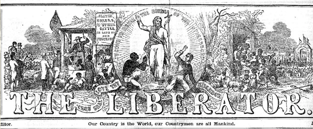
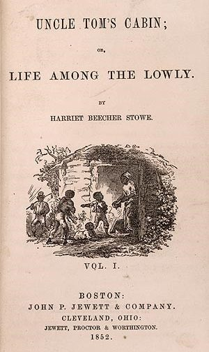
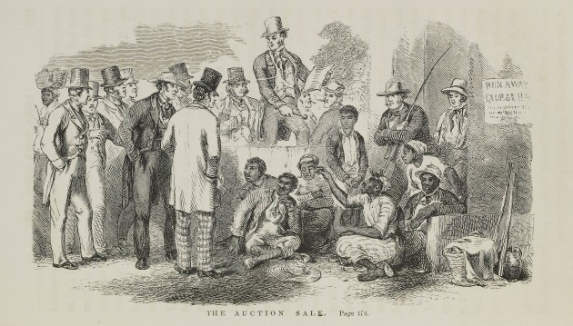
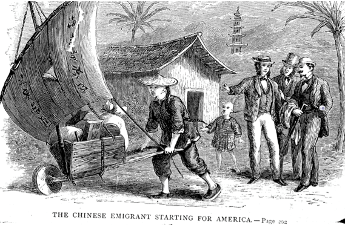
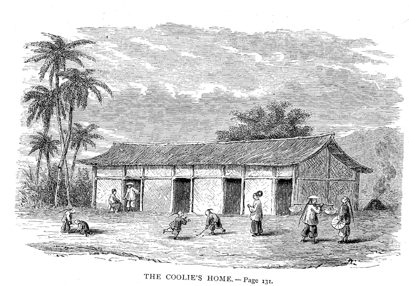
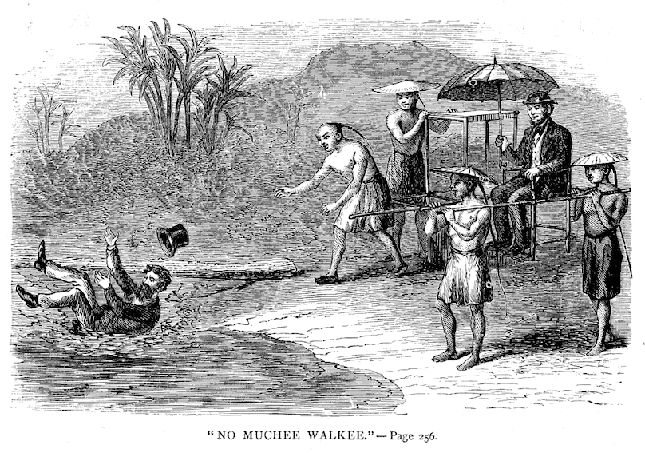

Web exclusive essay | Printable version (PDF)
© 2019 Stanford University Chinese Railroad Workers of North America Project
SHELLEY FISHER FISHKIN
Stanford University
One morning in early March 1870, Russell Conwell, a twenty-seven-year-old journalist from Massachusetts, stood on the upper deck of the Pacific Mail steamer America as it headed to Hong Kong and watched the bluffs of the coast of China near Fuzhou come into view.1 A group of Chinese workingmen had come up on deck from steerage in order to catch a glimpse of their native land. Conwell eyed them with interest and struck up a conversation. The men had been in California for eight years, they told him, possibly in English that they had acquired during their stay, or in some mix of English and Chinese that allowed Conwell to use the smattering of Chinese he had taught himself from books.2 Later Conwell wrote down what they said in a diary.3 They were from a village near Canton (present-day Guangzhou) and were going home to see their families. They planned to “go home quietly at night” so as not to draw attention to themselves, having broken the law against leaving the country. They expressed a keen desire to take care of their families, yet they planned to return to California as soon as they could. Conwell recorded their exchange:
Q. How long have you been in California?
A. Nearly eight years.
Q. Are you coming home to see your families now, or on business?
A. We come to see our families. But we do not know where we will find them. When we left them they were in a village near Canton, but we have not heard from them since we saw a man who emigrated from there five years ago.
Q. Do you expect to see them all alive?
A. We hope so. We have not heard of any raids or famines, and they were generally healthy. The police do not know that we are out of the country, and will not treat them harshly on our account.
Q. How do you hope to escape the law against leaving the country?
A. By going home quietly at night and keeping matters to ourselves.
Q. What would you do if discovered?
A. Just as we have done before. Pay the police and run away.
Q. Is it pleasant to go home under such circumstances?
A. No, it is not; and we shall go back again as soon as we can.
Q. Do all who return expect to go back to California again?
A. Not all. But nearly all.
Q. Why do you come home yourself, instead of sending for your family?
A. We must pay our debts, must provide for our aged parents, and know that our families do not suffer. The law will not let the wife come to us. Besides, if we could bribe them to let the family go, it would cost too much for insurance.
Q. What insurance?
A. Of a burial in China. It costs seven dollars per person.
Q. If you feel it such a duty to take care of your relatives, why did you leave China instead of attending to their wants at home?
A. Because we could not stay at home [italics in original].
Q. Were you driven out of the country?
A. In one sense we were. The police kept arresting us for nothing we had done, the tax collectors took our rice and clothes, the landlords reduced our wages, and we were afraid the government was going to take us for soldiers.
Q. Do you love China?
A. Yes. But we mean to live and die in California.
Q. But are you not ill treated in California?
A. Yes, sometimes, but not so badly as we were at home, and we earn more money [italics in original].4
Conwell values the candor of the voices that come through in this exchange. His ear for the voices of ordinary people was sharp. The fact that he listened so attentively to what they said about their experiences in America and in China—and their dreams and their frustrations—helped make the book he published distinctive. At a time when Americans who had written books about China tended to be missionaries, merchants, or military men,5 Russell Conwell wrote from a different standpoint: that of a journalist. By his own account, his was an “unbiased investigation.”6 His goal was simply to give his fellow Americans a better understanding of why the Chinese emigrate and how.
The book, based on letters Conwell had sent to the Boston Evening Traveller and the New York Tribune in 1870 depicting the people he met and the country he encountered during his travels in southern China, was officially published in 1871, although reviews of it began appearing in the fall of 1870.7 It featured illustrations by the well-known popular artist Hammatt Billings.
According to his first biographer, Conwell’s “Round the World” tour in 1870 had begun with “a lecture trip in the western Territories and California. … He then went on to the Sandwich Islands, through Japan into the interior of China, and to Pekin, visited Sumatra, Siam, Burmah, Madras, journeyed to the Himalaya Mountains, through India, pierced Arabia to Mecca, went to the Upper Nile, and came home by way of Greece, Italy and France.”8 But it was Conwell’s account of the China portion of that trip that became his first book. His firsthand investigation of Chinese emigration was also the topic that his newspaper particularly promoted to its readers before he left on his much-touted world tour. The Traveller featured a prominent advertisement in its November 24, 1869, issue headlined “Russell in China.” It read:
Our correspondent, Col. Russell H. Conwell, will start in about four weeks for a trip Around the World, going overland to San Francisco, and thence to China and India. He will send letters regularly to the Traveller, the first of which will appear about the first of February. The Chinese Question, with the probable effect of Chinese immigration upon this country, is now one of the most important before the American people, and he will give especial attention to a study of the social habits of the Chinese, so that our readers can rely upon his descriptions and conclusions. India, next to China, is the most interesting country in the world, and “Russell” will doubtless find there a field for his rare descriptive powers.9
The newspaper’s assumption that China was “the most interesting country in the world” for its readers reflects the increasingly prominent place China was occupying in the minds of Americans during this period. The labor of some 12,000 to 15,000 Chinese workers had been essential to the construction of America’s first transcontinental railroad, which had been completed in 1869, the year that the Traveller advertised Conwell’s upcoming round-the-world trip. When Conwell’s book appeared, Chinese emigrants who had worked on the railroad were fanning out across America to build scores of additional rail lines.10 They were also taking jobs in shoe factories in North Adams, Massachusetts, and in cigar factories in San Francisco. They found work as merchants, miners, loggers, household servants, compositors, photographers, farmers, and book binders. They opened laundries and restaurants in towns and cities, large and small, across the United States.11 And, of course, many returned to China. Americans were increasingly interested in reading about China and the Chinese at this time. Conwell’s book was widely reviewed and universally praised.
Conwell’s book built on earlier publications that endeavored to explain Chinese society—its arts, religions, legal system, and so on—to Americans. These included Samuel Wells Williams’s The Middle Kingdom (1848),12 Justus Doolittle’s Social Life of the Chinese (1865),13 and John L. Nevins’s China and the Chinese (1869).14 Conwell quotes extensively from these earlier sources, particularly on such topics as the Chinese people’s attitudes toward the emperor and the nature of the Chinese civil service system.15
But Conwell did several things that none of the previous writers had: while they endeavored to convey to English-speaking readers Chinese social and political life in general, Conwell focused on what motivated the Chinese to immigrate to America at this time and on the details of how they managed to do so. He also attended to the experiences of those who returned to China after having worked in the United States. Whether they had come to mine gold or build railroads, the Chinese he interviewed were nearly all from Guangdong, the region in southern China from which most early immigrants to America came. Conwell brought his natural curiosity and interest to the subject, as well as his rudimentary knowledge of Chinese. He sought help from his many well-placed multilingual friends and prevailed upon them to translate key documents for him. He used his skills as a sharp observer, honed through years of writing for newspapers, to take notes on conversations and write them up before they faded from memory. He vividly reported scenes he witnessed—including some that shocked readers back in the United States.
He crafted what he saw and what he learned into prose that was lively and fresh, and that often utilized a style he had honed in the distinctive feature stories about Civil War battlefields and what had transpired there that Conwell published just before his newspaper sent him to China.16 It was the popularity of these engaging letters that led the Traveller to send Conwell on a journey around the world as the paper’s “special correspondent” in 1870. Portions of his letters from China and the book that would come out of them would be written in that style, as well.
Conwell’s first book, Why and How, offered a unique glimpse into the lives of the workers whose labors had done so much to transform both their own country and the United States. It would be eclipsed by the many subsequent books he wrote—biographies, histories, and works of popular theology.17 And although his career as a public lecturer began with two lectures about his trip to China, it was a different lecture that came out of the same 1870 around-the-world trip—one he called “Acres of Diamonds”—that he would deliver on over 6,000 occasions and that would make him one of the most famous lecturers in the United States.18 During the period when he wrote Why and How, Conwell had no special affinity for religion, but within ten years he would become a Baptist minister, and four years after that he would found Temple University in Philadelphia. Conwell’s illustrious later career—as perhaps the most famous Baptist minister in the country, as one of the nation’s best-known lecturers, and as a prolific author of books—overshadowed his early work as a journalist. His first book would be largely forgotten over the course of the century and a half since it appeared. It is cited relatively rarely, despite the fact that it is readily available online and in some libraries in the United States. This is unfortunate given all that it still has to offer: it provides a unique window on the experience of nineteenth-century Chinese who traveled overseas to work in the United States and returned to China. Why and How: Why the Chinese Emigrate and the Means They Adopt for the Purpose of Reaching America had not been published in China or translated into Chinese until the spring of 2019, when a Chinese-language edition of the book that I edited (translated by Yao Ting) is scheduled to be published.19
Russell Conwell was well-suited to write Why and How for a number of reasons. He had mastered the process of recording his observations in diaries and revising his notes for publication as a journalist. As a Union soldier during the Civil War, Conwell frequently sent vivid, lengthy, compelling reportage describing scenes of camp life and battles that he had witnessed to the Hampshire Gazette and Courier of Northampton, Massachusetts.20 In 1867 Conwell was named editor-in-chief of the Minneapolis Chronicle, and in 1868 he founded a newspaper, Conwell’s Star of the North, in Minneapolis with his wife. Soon after he became associate editor of the Boston Evening Traveller and special correspondent of the New York Tribune.21 In 1869 the Traveller sent the twenty-six-year-old Union veteran on a tour of Civil War battlefields in the former Confederate states. The twenty-five letters Conwell sent to the newspaper from Port Hudson, New Bern, Gettysburg, Vicksburg, and New Orleans (written under the pen name “Russell”) bristled with techniques that would later be associated with the “New Journalism,” a set of stylistic strategies that would be admired in the United States in the 1960s and early 1970s.22 The “New Journalists” employed techniques usually found in fiction: dialogue, scene-by-scene construction, imagining what people are thinking by writing as if inside their heads, and recording “status details” such as people’s gestures, household objects, and clothing.23 Despite their often hasty composition, Conwell’s travel letters were extremely popular, earning him both national and international admirers. The London Times, for example, called him “a writer of singular brilliancy and power.”24
Conwell’s previous experience as an immigration agent in Europe for the state of Minnesota was useful background as well. In 1867 Conwell, then editor-in-chief of the Minneapolis Chronicle, sought and received an appointment from Minnesota’s governor as immigration agent, charged with helping the state attract emigrants from Germany, Denmark, Norway, and Sweden. Minnesota, which had become the thirty-second state in 1858, was eager to attract settlers from Scandinavia and Germany. Under the federal Homestead Act of 1862, which was enacted to encourage western migration, new settlers were given 160 acres of public land for a nominal filing fee after completing five years of residence. This made Minnesota an attractive destination for farmers from these regions.25 Conwell’s work in this position had encouraged him to think about the pushes and pulls that shaped immigration in contexts other than China, topics that he continued to ponder when he was sent by the Traveller on a world tour, and helped motivate him to compare Chinese immigration to the United States with immigration to Singapore, Penang (then a British Crown Colony), and elsewhere. Other factors worked to his advantage as well.
Conwell had a legendary photographic memory as well as a gift for learning languages. During his childhood in western Massachusetts, one of his schoolteachers tried to train her students to develop a photographic memory that would allow them “to repeat long recitations verbatim, by reading them over but once. It was done by scrutinizing the page closely, word by word, once, then shutting the eyes and reproducing the actual page on the mind, so as to read it off, word for word.”26 She failed utterly with most of her students, but Russell Conwell was a star when it came to mastering the technique (he reportedly said “that some of those pages he recited then, came to him twenty-five years later … and every word as clear as the print.”)27 A classmate recalled that “he could recite page after page of Virgil, Homer, and Blackstone.”28 Later in his life, while recovering from wounds he had received in battle during the Civil War, he became an apprentice in the law office of William S. Shurtleff, a Springfield judge who had been his commanding officer in the Massachusetts Volunteers. Conwell’s biographer, Agnes Rush Burr, tells us that “to the astonishment of the [j]udge, he repeated from memory the whole of Blackstone [Commentaries on the Laws of England], which he had learned at Newbern [New Bern, North Carolina], where he had been stationed with his regiment during the war; Judge Shurtleff considered it an unprecedented feat and called together a number of lawyers to hear it. They all agreed that, to their knowledge, such a thing was unknown in the history of the legal profession.”29 Conwell’s photographic memory allowed him to digest and utilize key books by others about China that related to his project and meld their insights effortlessly with his own. He also had a remarkable aptitude for languages that helped make it possible for him to teach himself enough Chinese to be able to “travel and secure the comforts of life without difficulty” there and “converse sufficiently for ordinary purposes,” as he later noted.30 A childhood mentor had “advised him to take a book with him at all times, and study every spare moment, wherever he might be.” Russell followed this advice with enthusiasm.31 Indeed, it was precisely that habit that startled a friend who came to pick him up in his office a few years before his death and found him using the few spare minutes that he had between engagements to study a Chinese grammar book.32
Conwell brought to his investigation a visceral, personal understanding of what poverty felt like. Born in a three-room farmhouse in South Worthington, a largely agricultural town in western Massachusetts, in February 1843, Conwell recalled that his family had been “very poor. I slept with my brother in the old attic where there were no planed boards for the floor—just rough planks. … [I]n winter the cold wind brought in drifts of snow so much that we were often nearly frozen. When it was not cold there were rats running over the floors and sometimes over the faces of the boys who slept there.”33 He earned his keep at boarding school by working for local farmers and by teaching in nearby schools. At Yale College he earned money by digging potatoes, gathering and selling wild herbs, doing scullery work (chopping vegetables, cleaning tables, etc. ) at the New Haven Hotel, and giving music lessons. He lived on “very scanty rations.” A former Yale classmate later remembered that at Yale in 1862, “he was as poor as a stray cat.”34
Conwell also brought a sense of social justice and empathy for the downtrodden that had been nurtured during his childhood in an abolitionist household; both fueled his outrage at the “coolie trade” in the past and at forms of oppression he witnessed in the present.35 His family spent time reading the abolitionist newspaper the National Era together. Uncle Tom’s Cabin, which was serialized in that paper starting in June 1851 (when Conwell was eight years old), also figured prominently in his childhood.36 His parents, Miranda and Martin Conwell, made their family home and their barn a “safe house” on the “Underground Railroad,” where escaped slaves could rest, eat, and revive their spirits before continuing on their journey.37 Conwell wrote:
My father was one of the links between Virginia and Canada. A slave would run away from Virginia and find help in Baltimore. From Baltimore he was taken to Philadelphia, and from there to New York. There were men selected to take the slave to Hartford [Connecticut], and from Hartford to Springfield [Massachusetts], and from Springfield up to my father’s home in the mountains; another man often took him from that point to Bellows Falls [Vermont], and the last one took that slave to the Canada line and left him there where he would be a free man. My father believed it to be a clear duty to his God to help the escape of those slaves and also to do all he could in order to secure their freedom by law in the southern states.38
His father, Conwell wrote, “was a breaker of the human law, and such a breaker as to be liable to arrest any night or day.… We were constantly afraid that father would be taken away to prison. For he was a breaker of the law. And yet, while a breaker of human law, he was not a breaker of the Divine Law.”39 The abolitionist John Brown, who would be executed in 1859 following a raid on the federal arsenal at Harpers Ferry, Virginia, earlier “was in a kind of partnership in the wool business at Springfield” with Conwell’s father and was a guest in their home frequently.40 The abolitionist Frederick Douglass was a friend of the family’s as well.41 Conwell also remembers going to hear the Congregationalist clergyman and social reformer Henry Ward Beecher preach antislavery sermons in his Brooklyn, New York, church when he was a teenager. He recalls Beecher having taken up a collection in the form of a mock auction to purchase the freedom of a young fugitive slave who was present. “I shall never forget that scene,” Conwell later claimed. “The awfulness of selling human flesh and blood came over me overpoweringly. I understood, better than I ever had before, my father’s determination to help runaway slaves and John Brown’s willingness to give his life, if necessary, to free them.”42 Convinced that “[s]lavery was wrong,” Conwell enlisted in the Union army “to do away with slavery, to break the chains that held the slaves.”43
Conwell had well-placed contacts in Hong Kong, Canton, and Peking who helped him understand life in Guangdong. These included the US minister to the Court of Peking, the US consul general at Hong Kong, the British consul at Canton, and the editor of the Daily China Mail, among others.44 Conwell brought an independent and honest approach to his subject. “The author’s sole purpose in writing this book,” he told his readers, “has been to give to his friends in a readable shape such facts and thoughts as have requited his earnest, unbiased investigation.”45 These and other factors made Conwell a particularly astute observer and analyst of Chinese immigration to the United States and helped make the book the distinctive volume that it was. He completed it in record time.
This is not to say that Conwell was immune to prevailing prejudices Westerners had toward Chinese culture, for he was not; the book is marred by his occasional acceptance of stereotypes common to his era. For example, he finds Chinese music to be simply “noise” and views much of Chinese religion and cultural traditions such as feng shui as largely superstition. His tone is occasionally condescending. He repeats uncritically stereotypes of the Chinese, such as John L. Nevins’ statements that “[t]he Chinese as a race are, as compared with European nations, of a phlegmatic and impassive temperament, and physically less active and energetic”; that “they are also characteristically timid and docile”; and that they “are comparatively apathetic as regards pain and death, and have great powers of physical endurance as well as great persistency and obstinacies.”46 He uncritically repeats the notion that the Chinese are gifted with skills of imitation but not invention,47 and he calls them “a deceitful and cunning people.”48 (Some of these same prejudices appear in a book published the same year as Conwell’s by the Sinophile missionary William Speer: The Oldest and the Newest Empire: China and the United States. Speer writes, for example, that the Chinese “generally require to be watched to prevent dishonesty and pilfering,” and that they are not as “sensible of the evil of lying” as Christians are.49
To be fair, Conwell also tries to undercut some popular prejudices. For example, he tackles the subject of the alleged readiness on the part of the Chinese to eat rats and explains that it is poverty rather than preference that creates this behavior (Chapter 3). He also challenges the idea that material greed—a lust for gold—is the key engine driving immigration and makes it clear that mere economic survival—of oneself and one’s family—is a more compelling motive (Chapter 4).
Conwell also devotes significant attention to countering the notion that that the Chinese workers who came to the United States were generally illiterate. He notes:
Education—i.e. reading—is also general, even among the lower classes, owing to the fact that the ancestral tablets and government proclamations are always before them in print; while every fan, joss-stick, lantern, and ring, with almost every other implement or ornament is covered with inscriptions, which their curiosity leads them to study out.
The customs are such that the Coolie must read, for his own protection, but in only a few cases do the lowest classes get their knowledge at school.50
Speer’s The Oldest and the Newest Empire echoes these ideas. Speer writes: “In the South of China the people are so generally taught to read that it is rare to meet with a man who does not know the printed characters in books.”51
Conwell seems to have been somewhat ill-informed about the impact of American anticoolie laws on Chinese who wanted to immigrate to the United States, assuming that any would-be emigrant had to demonstrate that he had paid for his steamship ticket in its entirety in advance, before leaving Hong Kong, in addition to swearing that he was coming to the United States on a purely voluntary basis. (“None but voluntary emigrants were allowed in American vessels or in foreign vessels bound to American ports. No Chinaman would be considered a voluntary emigrant unless he paid his fare in advance [italics in original] and was unbound by any contract to labor after his arrival in the destined port. This law is in force still.” 52 The credit-ticket system seems to have remained in place despite American anticoolie legislation attempting to outlaw it.53 Chinese emigrants often agreed to work off the price of their ticket through payments on their debts to the Six Companies and other entities, during a specified period of time.54 Unlike the Chinese victimized by the Cuban and Peruvian coolie trade, immigrants to America could not be indentured for long periods.55 They could, however, be required to make payments on specific debts within a specific time frame: “a term not exceeding twelve months.”56 Conwell also demonstrated a limited understanding of the ways in which the selling of women and children were understood in Chinese culture, assuming that the sale of women and children in China meant what it had in the US South before the Civil War. He wrote about two incidents of women and children being sold to pay the debts of a husband and father who had fallen behind in paying back the loan he had been given for his steamship ticket to America, referring to the incidents as examples of these family members being “sold into slavery.” Although he noted that such things did not happen terribly frequently, his reports shocked American readers. As Elizabeth Sinn notes, for generations in China, “poor families had no qualms about selling [daughters] as bonded servants (known in South China as mui tsai), adopted daughters, concubines, or prostitutes. … Girls sometimes sold themselves in cases of urgent need for money, such as for a father’s funeral. Husbands selling or mortgaging their wives and concubines to brothels was not unheard-of.”57 These arrangements sometimes involved quasi-adoption into the family that purchased the women and girls. When he witnessed what scholars today sometimes think of as a complex kind of kinship structure (albeit one in which women were treated as property), Conwell saw what looked to him like an antebellum slave auction. The illustration in Why and How captioned “Sold for Debt” by Hammatt Billings further emphasized the analogy, which was imprecise at best. (As Teemu Ruskola has noted, “Outright slavery did not figure prominently in the late traditional Chinese political and moral economy—not surprisingly, perhaps, considering the highly developed technologies of servitude made possible by the elaborate kinship system.”)58
Conwell has great respect for the Chinese system of laws, but he bemoans the fact that it was nearly universally evaded by government officials and others. He writes:
Any student, after reading the Chinese Code as published by Lei-Kuei two thousand years ago, with its several supplements, will be ready to declare the laws of China to be worthy of the greatest judicial minds of the age. This code certainly has the merit of being simple, concise, easily understood, and, with the exception of the penalty for treason, scrupulously just.59
He arranged to have various sections of the Chinese Code translated for him, and notes that the man who provided the translation “remarked incidentally that it was ‘fit for the government of heaven.’” Conwell tells us that he “felt like applauding the remark as I read, one after another, those excellent provisions for public safety, private freedom, and the general welfare of the people. It did seem to be a ‘perfect’ system.’”60 But Conwell “could not understand why there was such a great discrepancy between the perfect state of society for which the laws provided and the deplorable condition of the people whom I saw all about me. While the Code of Laws seemed to be perfect, the execution of it seemed to be very, very imperfect.”61
One of the strengths of Conwell’s book is its attentiveness to the corruption that sentenced so many Chinese in Guangdong to lives of intense poverty and unremitting debt, factors that added to the allure of immigrating to the United States. “The Chinese nation to-day appears, to the traveller in the Provinces, like a conquered country still under martial law,” he writes.62
Every office, except those occupied by a few petty village officials, is filled by direct appointment from the Emperor, or, by high officials, in his name. The will of every official is law in the district over which he is appointed, notwithstanding the existence of this excellent code.63
He quotes Samuel Wells Williams’s book Middle Kingdom on the ransom frequently demanded by criminals masquerading as policemen, on the bandits who plunder boats of travelers and carry off the women, and on the proliferation of shameless bands of robbers. Conwell also cites Williams’s description of the frequent demands made by criminal gangs for what in America would be called “protection money” and Williams’ statement that bribes can buy justice in the nation’s courts. All of these factors, Conwell notes (seconding Williams’s analysis), contributed to the dire economic bind in which the average Chinese working man found himself.64
Whereas observers who came to the region as missionaries (some of whom may have been from fairly well-off backgrounds themselves) might not have identified personally with the plight of the impoverished masses in Guangdong, Conwell knew from personal experience what it was like to be poor. He empathized with their condition and described it in painful detail. Conwell reported being told by “a Chinese Merchant, who has long been in business in Canton,” that
when a man falls below a certain level in the financial world and afterward comes into the possession of any money he is taxed, accused, or threatened with false prosecutions, until he is again reduced to poverty or bribes the officials. Even then he will often be imprisoned, whipped, and perhaps beheaded because he has no more with which to bribe a second time. A despotism less accountable to law, or one more cruel, can hardly be conceived: and all this in the face of their boasted equity and justice! This state of affairs is growing worse and worse each year, as the tricks and deceits of foreigners are introduced. … 65
The government in Peking attempts to remedy these evils, Conwell noted, through “a system of espionage, by means of which the misdeeds of the inhabitants and officials are supposed to be reported at the capital,”66 a project that only exacerbates the existing corruption, since “[d]etectives steal and rob with impunity, and lay the charge upon some poor friendless Coolie who has not the education or means to defend himself, and he suffers for the sins of the detectives, while the latter receives the reward. All these official detectives, and many other persons who make espionage their business, are fast accumulating fortunes. … ”67 “What wonder is it, then,” Conwell asks, “that the people rebel … when they are abused, cheated, sold and enslaved (much oftener of late than in the years gone by) by the same power that took the place of their patriarchal fathers, and which should be their kind and considerate protector.”68
Conwell meticulously outlines the impact that the many layers of bribery and corruption have on the average laborer in rural China, who
receives in the agricultural districts eight or ten dollars a year, with his own board. Out of this eight or ten dollars he must provide for his family and clothe himself. If his family is large it will cost six dollars to clothe them, and more than the balance to board them. Only think of it! In a family of six there would be but a dollar’s worth of clothing for each during the year, and about sixty cents’ worth of food. But wait! They do not get so much as that. His “per capita” tax is eighty cents, and his tablets, &c. for regular worship will be a dollar, and his rent will be two dollars. This amounts to three dollars and eighty cents. Then, if he gets ten dollars a year, and avoids all extra calls upon his purse, he will have only six dollars and twenty cents left for the support of his family and clothing himself during a whole year. Now, if he injure or break an implement he will be charged for that; and it would be strange if in the course of a year he escaped without a single accident! His relatives may die and he be assessed for a share, if not for the whole, of the funeral expenses. In cases of rebellion, and they happen nearly every year, an extra tax is collected to defray the governmental expenses; while he may, in case of drought, be thrown out of work entirely. Carpenters and masons get about twenty-two cents a day, boarding themselves, but their taxes are sufficient to bring their income down to an equality with the farm hands. Clerks get twelve or fifteen dollars a year and their board. It must be said, in justice to the employers, that the Coolie usually gets his wages—such as they are—promptly. Sometimes the women assist somewhat in the support of the family, but unless they are sufficiently robust to endure field labor, their income will not be more than four or five dollars a year, they boarding themselves. Now, in order to live upon their wages and pay their taxes and assessments, they are obliged to adopt a thousand expedients for making palatable what would otherwise be offensive, and to live on the very coarsest food. In some districts they pay out two thirds of their wages in taxes, in which case they must find, beg, or steal their food for the whole year.69
Even these meager and sometimes virtually nonexistent wages are often diminished further. These workers are often vulnerable to being
arrested for fictitious misdemeanors and fined by the avaricious mandarin, and on stating their inability to pay him, are given a “week to make return,” which means go and steal it or be whipped and put in the stocks. They are incited to quarrel by the members of other families, for the purpose of furnishing an excuse to “capture” them and sell them to Portuguese traders. They are bled by false doctors, who want to sell the blood to alchemists. Their teeth are pulled to make salable trinkets. They are often punished, together with their whole village, for the act of some man who has escaped. They are accused of many crimes which their superiors have committed and laid to their charge. Often do they die of fatigue in the hot rice-fields, live a lingering death, afflicted with loathsome disease, or drown themselves in the creeks and rivers, for the want of a few cash with which to buy the necessaries of life.70
To make matters worse, the Taiping Rebellion, which claimed an estimated twenty million lives, left indelible scars, destroying much of the little infrastructure that there was and leaving barren desolation in its wake.71 Conwell quotes a writer from Nanking “having an extended [sic] knowledge of China, and who is the very best authority on this subject,” as noting that the present state of “the country overrun by the late rebellion … is a veritable wilderness.”72 He cites a Roman Catholic missionary who “speaks in sad terms of the utter demoralization of the people. Their old men and women ruthlessly slaughtered, their young men pressed into the service of the Taipings; their young women carried off and used for the vilest purposes, while their children were daily forced to see these spectacles of blood and the most revolting crimes perpetrated under their eyes. … ”73 The lack of navigable roads and passable canals in the wake of the Taiping Rebellion made it impossible to bring harvests, such as they were, to market and made the people’s poverty and hunger even worse. Conwell’s eye for detail and fascination with the intricacies of his topic help make his book a vivid record of life in the sending villages of Guangdong in 1870.
Despite the fact that Conwell may have misunderstood some of the impact of anticoolie legislation in the United States on the process of Chinese immigration, his detailed consideration of the ways in which labor contractors created incentives after 1862 to persuade potential workers of the benefits of coming to America is illuminating; also riveting are his eyewitness accounts of what happened when workers failed to keep up their payments on loans they had taken out for their steamship passage.
Labor contractors had little trouble painting glowing pictures of the riches that awaited Chinese workers on “Gold Mountain.” A unique aspect of Conwell’s book is its detailed description of the recruitment process and its inclusion, in their entirety, of translations of several circulars that were used to recruit workers in Guangdong to come to the United States. Since no copies of recruitment literature of this sort are extant, even in archives in China, it is all the more valuable to have the ones to which Conwell gives us access.
“A circular sent out by some ship-owners or contractors through the Chinese brokers,” announcing “a vessel is taking Chinese passengers for California or New Orleans,” finds its way to an impoverished young worker in Guangdong, stating “among other inducements, that the laborers shall have $30 a month after their arrival in America, and a comfortable passage across the Pacific Ocean.”74 Conwell notes that “these circulars are always couched in language easily understood, so that if a man can read at all he can easily master the contents. Everything is explained as far as can be, including the value of $30, and the cost of a ticket, in Chinese currency. Suggestions are also made about the most speedy way of disposing of property and getting into Hongkong, from which port all American bound emigrant vessels take their departure.”75
Conwell shares an extract from “a copy of a circular issued in the Chinese language and sent into the country around Canton by a Chinese broker’s establishment in Hongkong” that was translated for him. The circular reads as follows:
Americans are very rich people. They want the Chinamen to come and will make him very welcome. There you will have great pay, large houses, and food and clothing of the finest description. You can write to your friends or send them money at any time, and we will be responsible for the safe delivery. It is a nice country, without mandarins or soldiers. All alike; big man no larger than little man. There are a great many Chinamen there now, and it will not be a strange country. China god is there, and the agents of this house. Never fear, and you will be lucky. Come to Hongkong, or to the sign of this house in Canton, and we will instruct you. Money is in great plenty and to spare in America. Such as wish to have wages and labor guaranteed can obtain the surety by application at this office.76
Conwell then projects himself into the mind of the “discontented Coolie,” noting that no sooner does he read this—or hear it read—than he starts to feel “that the time for the move which he has contemplated has come.” He thinks, “Here is a chance for the poor man to escape tyranny and want and become independent and happy. … Who knows what thoughts fill his brain and quicken his heart as he lies down upon the cold damp ground of his hovel the night after the receipt of the circular, resolved to emigrate to America” [italics in original].77 Conwell notes that “[c]irculars and runners often misrepresent the condition of the Chinaman in America, and, for the purpose of filling a ready vessel or making out a contract within the stipulated time, give reasons for their haste which are not sustained by the truth.”78 The circular’s claim about the sum that Chinese workers can earn in the United States, however, seems to be fairly accurate, at least in some places and times in the 1860s in the American West. Many of the railroad workers, did, in fact, earn $30 a month. That sum must have seemed an astronomical one to Chinese agricultural laborers in Guangdong who earned just $8 or $10 a year, out of which they needed to feed and clothe their families and pay other expenses.79
The privations that the workers’ economic condition in Guangdong mandated were especially hard. Conwell tells us that “in order to live upon their wages and pay their taxes and assessments,” the laborers “are obliged to adopt a thousand expedients for making palatable what would otherwise be offensive, and to live on the very coarsest food. In some districts they pay out two thirds of their wages in taxes, in which case they must find, beg, or steal their food for the whole year.”80 The circulars designed to lure them into immigrating to America speak to those deprivations directly, promising the workers that in addition to $30 a month (omitting any reference to the higher cost of living), they will enjoy excellent food and accommodations on the ship and will be welcomed with enthusiasm when they arrive.
Conwell reprints a “[t]ranslated copy of a circular issued in 1862 by a comprador [agent] in Hongkong, who contracted to load an Oregon vessel with emigrants,” presumably to work in mining enterprises there:
To THE COUNTRYMEN OF ARR CHEAU! There are laborers wanted in the land of Oregon, in the United States, in America. There is much inducement to go to this new country, as they have many great works there which are not in our own country. They will supply good houses and plenty of food. They will pay you $28 a month after your arrival, and treat you considerately when you arrive. There is no fear of slavery. All is nice. The ship is now going and will take all who can pay their passage. The money required is $54. Persons having property can have it sold for them by my correspondents, or borrow money of me upon security. I cannot take security on your children or your wife. Come to me in Hongkong, and I will care for you until you start. The ship is substantial and convenient.
(Signed) ARR CHEAU.
Another circular, issued in 1868, read as follows:
GREAT PAY. Such as would be rich and favored by Shan, come to the writer for a ticket to America. The particulars will be told on arrival.
(Signed) SHOO MING.81
Conwell tells us that “although brokers and other interested parties have been in the habit of publishing circulars upon the subject whenever a cargo of Coolies was wanted, yet the first occasion, as I am told, on which they met with any definite return was at the-time of the great demand for laborers to build the Central Pacific Railroad.”82 He notes that “[t]he construction and equipment of that road was one of the most important projects ever undertaken, when considered in a national point of view.”83 In the minds of some, “the construction of that track” was as important to America’s “present unity” as the Union armies led by General Ulysses Grant during the Civil War.84 As Conwell tells the story,
it was very necessary to the government and to civilization that the road should be completed at the earliest possible moment. All that the constructors asked for from the national council was granted without hesitation. Money and acres were given away by the million and much treasure squandered that would have been saved by a little delay. But no! California was in the balance, and nothing but some great enterprise undertaken in her behalf by the national law-makers would keep her men and gold in the Union. The Pacific Road was that enterprise.85
But the labor shortage soon became a dire problem:
At that time the isolated State of California was not sufficiently supplied with laborers to carry on its own liberal enterprises, and consequently was ill prepared to undertake the grading of a thousand miles of railroad, which must mount to the snows, descend to the blooming valley, and bore through rocky ridges, again and again before it reached the great basin of Salt Lake. In this exigency an appeal was made to the Chinamen. “Come over and help us!” echoed across the Pacific. “We have money to spare, but no one to earn it,” said the despatches to Hongkong.86
The brokers printed the circulars and had couriers distribute them far and wide, “scattering the invitations everywhere and proclaiming to the wonderstruck Coolies that great nation had need of them.” Conwell tells us that “couriers went into the hovels and told of fine houses, into the rice-swamps and spoke of healthier occupations, into the workshops and ridiculed the pay,” losing no opportunity “to sow discontent in the desponding hearts of every laborer’s family. Men who had heard of America only as a land of fable, where none but the good were allowed to go, heard it then for the first time in connection with themselves.”87
Conwell writes that “[e]very valley and mountain in Fukien [Fujian], every plain and river in Kwantung [Guangdong], contributed to the army of labor which was to give the Union peace and prosperity. So many came to the ports that there were not ships enough to take them; and years passed before all had left Hongkong who came there to answer the invitation sent by the Pacific Railroad.”88 Conwell notes that it soon became impossible to induce the laborers to go anywhere but the United States. He tells us that ships bound for the Sandwich Islands (Hawaii today) remained in the port of Hong Kong for weeks, while their owners spent “large sums of money in advertising” for workers to be taken there—only to be able to recruit a dozen men. But Pacific Mail steamers bound for San Francisco filled up immediately.89
Chinese had been working on railroads in the United States before the construction began on the Central Pacific. For example, in June 1858 the Sacramento Union reported that fifty Chinese workers had been hired to build the California Central Railroad, demonstrating that “Chinese laborers can be profitably employed in grading railroads in California.”90 And in 1860 Chinese workers helped build the San Francisco and San Jose Railroad, the first railroad to link San Jose to San Francisco.91 But the Central Pacific offered opportunities on an unprecedented scale to thousands of young men from Guangdong.
After the completion of the Central Pacific Railroad, the recruitment of Chinese workers continued. A circular Conwell quotes that was issued in April 1870, around the time Conwell arrived in China, asserted that “[o]ne can do as he likes” in America, and that one can get “nice rice, vegetables, and wheat, all very cheap. Three years there will make poor workmen very rich, and [they] can come home at any time.”92 It maintained that on the ships to America, “passengers will find nice rooms and very fine food. They can play all sorts of games and have no work. Everything nice to make man happy. It is nice country. Better than this. No sickness there and no danger of death. Come! go at once. You cannot afford to wait. Don’t heed any wife’s counsel or the threats of enemies. Be Chinamen, but go.”93 Conwell notes that “[s]everal other translations of these advertisements have been put in my hands by friends, some of which state the plain truth, and contain trustworthy information upon the manner of conducting business in America.” Unfortunately, however, “the larger part of them use the most extravagant and, in some instances, outrageously false expressions.”94
The price of the steamship ticket—$54, as mentioned in the circular quoted above—was a tremendously difficult sum for workers to raise. Many borrowed what they could from family and friends and sold anything of value that they owned (clothing, furniture, etc.) but still came up short. As a last resort, they sometimes put up their family members as collateral. One seemingly almost throw-away line in the advertisement circulated by Arr Cheau bears repeating: “I cannot take security on your children or your wife.”95 The fact that Arr Cheau needed to assert that he would not accept wives and children as collateral draws our attention to the fact that many other brokers probably did.
The ubiquity of this arrangement comes across, surprisingly, in a fictionalized letter by Mark Twain published in October 1870 in The Galaxy magazine under the title “Goldsmith’s Friend Abroad Again.” In this series of letters, Twain offers a satirical critique of racism toward the Chinese in San Francisco from the perspective of a Chinese emigrant to the United States.96 In one of his letters to a friend in China, the fictitious Ah Song Hi notes that the price of his passage was “a very large sum—indeed, a fortune” that was advanced to him and that he has a period of time to pay. He tells us that “for security for the payment of the ship fare,” he has “turned over my wife, my boy, and my two daughters.”97 But he has been told by the person who advanced him the fare that “they are in no danger of being sold, for he knows I will be faithful to him, and that is the main security.” Given that Ah Song Hi’s naivete and gullibility is a central theme of Twain’s satire in this piece, it is highly likely that Twain knew that it did not always work out that way—that real-life Chinese emigrants’ wives and children were indeed in danger of being sold. Russell Conwell himself witnessed the sale of family members of an emigrant who had failed to meet the payments on the credit extended to him for his steamship ticket to the United States; he also heard a firsthand account of a similar case from the wife who had been sold. His reports on what he saw shocked American readers.
Conwell described the phenomenon he refers to as debt slavery in both a newspaper column and in his book, but the article and the book recount two different cases. Both accounts are disturbing and valuable due to the detail they provide about what can happen to a worker’s family members who were put up as collateral for a ticket to America when the worker fails to make his payments on the debt. In Why and How, Conwell writes that such “sales for debt, in cases where the Coolie pledges his family for the price of his ticket, can not be said to be very frequent, although they are much more so now than they have been in past years.”98 According to his first biographer, William C. Higgins, one of Conwell’s letters, which will be described in detail below, caused some diplomatic tensions. Higgins writes that “[h]is letter from Hong Kong, China to the New York Tribune on ‘Chinese Emigration’ innocently caused some diplomatic difficulty through the exposure of the labor contract system.”99
In the article to which Higgins refers, Conwell provides an eyewitness of one such sale in “Cowloon” (Kowloon).100 The details of the case that Conwell describes in Why and How centers on a family from the town of Tsunghwa who were sold in Canton.101 The latter story was related to him by two individuals: the worker’s wife (who had herself been sold), with whom Conwell spoke at length, and the ship captain who had purchased one of the worker’s sons.
As Conwell explained in his column of July 14, 1870:
If the Chinaman gets to America at all he must borrow the money here to take him over. Not one in a thousand of those who leave the port of Hong Kong are worth such an enormous sum as forty dollars. They get the money here; and in nearly every case give for security a bond on the persons of their families or friends [italics in original]. The Chinaman gives his note to the ticket broker here, who, in his poverty usually charges him five times the first cost of the ticket. The broker takes a bond of the mandarin of his district to secure the note. The mandarin secures himself by taking a bond from the alderman of the coolie’s village and they receive the personal bonds given by his relatives. All these men charge a fee for doing this, and it is added to the cost of the ticket. In that way the Chinaman gets to California bound through his friends to pay into the California branch of the broker’s establishment so much money each month until the whole amount is cancelled. If he fails in one payment he is to forfeit what he has paid. But as he expected thirty or forty dollars a month, he never thinks for a moment that he could fail to pay it. But they do fail in a great many cases. Not as many last year as in the year before; but a large number even then. Upon the project of note here the broker sues the mandarin and gets his pay on the note. Then the mandarin sues the alderman, and they pay. After which, with all the costs of fees and collections added, the alderman presents the note to the family who have become responsible for the debt. What can they do? They have no money and no property. All they can do is to deliver themselves and their families up to be sold for debt according to Chinese law. And here is where the American law makes slaves.102
It was the passage that followed, however, that must have struck readers as particularly jarring:
I saw
The Sale of a Family
Last week for debt, where the husband and father was in California, and perhaps I cannot do better than to tell you about it. There were five children—three girls and two boys. We had passed them three times in our chairs during the day as they stood beside the road dressed in their holiday attire of black. The silence they observed whenever any person passed, and their downcast looks, created curiosity on our part to know their business there. Arr Hung (our waiter) was called up and asked the cause of this little parade. “Why,” he said, “the girls and perhaps the whole family, are for sale.” We stopped our chairs and stepped out to have a talk with them, using Arr Hung as an interpreter.103
Conwell may not have been the only American to witness the sale of a family to pay the debt of the husband and father who had put them up as collateral for his ticket to America, but he seems to have been the only one to record such an event—perhaps itself a reflection of the relative infrequency with which such events occurred. The detail of his report makes it particularly valuable, and for that reason I quote it here in full:
The mother was wrinkled and gray, and hung her head, as if she were afraid to look us in the face. But the children, with the exception of the oldest girl, looked cheerful, and were quite pleased with their holiday attire. The oldest girl was sixteen and the oldest boy fifteen. So said the gruff old broker who had the party in charge and who seemed quite anxious to dispose of his wares. After a great deal of quizzing and evasive answers, the broker told us that the husband and father was in California, and had neglected to pay his note given for his passage, and that his family was now offered for sale to pay the debt. He hoped to be able to pay the debt with the sale of the two oldest girls, but as yet had received no offers. He said that the family became security voluntarily, and he never knew of a case where they did not voluntarily offer themselves for sale if the note was not paid. In reply to our questions he said that when a customer bought a child or person, the purchaser was made at once the owner of the child, body and soul. No Chinaman would dispute the purchaser’s right to do whatsoever he pleased with the human being he had paid for. The boys would make good servants, he said, and in the course of a few years be worth a fortune to the owner. The girls would make good “armors” (or nurses as they are called in America). He would show us their physical beauty—would make them sing and play tricks if we thought of buying. How much would we give? The oldest girl he would sell for four hundred dollars; the next one for two hundred, and the little six-year-old for fifty. The boys he could not sell until the girls were disposed of. We thought the price too high. The market was glutted with salable girls, and he must not think of getting over one hundred for the oldest and handsomest, while for the little one he must not expect over ten dollars. He sneered at that, and said that Englishmen always talked in that way when they wanted to buy. While we were talking, a party of blue-robed Chinese aristocrats came up and began to inspect the family. They opened the mouth of the oldest girl—rapped on her white teeth to see if they were sound—pulled open her dress—thumped her ribs—laughed at her little feet—told her to show the whites of her eyes—ordered her to sing, and show them the trinkets which the fond mother had given her as a parting gift. All the while the salesman kept up a constant jabber in which we took no interest. Time pressing, we passed on, leaving the parties disputing about the price, and I discussing the probabilities of their running away if taken to Hong Kong. After making our call, we returned the same way to ascertain the result of the sale. Only the mother and the boys were left. The debt was only three hundred dollars, and fifty of it still remained unpaid. I have been often told by residents in China that the parents would as soon sell their children as a cow or a pig. And I had begun to believe that such was the case upon passing the group the first time. But the scene had changed. The girls were gone and now a boy must go also. The mother sat in the dirt, with her arms around the youngest, wailing in a most piteous manner, and as Arr Hung said, cursing the men that sold her husband a ticket to America at $300, which cost them but $10. The broker sat listlessly by, smoking his pipe and twirling his cane, looking as if it was the smallest matter of business with him. The boys were crying and seemed very much afraid of us now it was certain that one of them must go. But we passed on and left them in their misery. We never knew whether the boy was sold to a childless man to be treated as a son, to a Portuguese to be carried to the West Indies under a nominal contract, or to a native landowner to be his slave. But that one of them was sold into servitude for the sum of fifty dollars, there can be no doubt. The girls were doubtless purchased for the vilest of purposes, unless they had the rare luck to fall into the hands of some native in search of a legitimate wife.104
Conwell then goes on to comment more generally on the sale of family members of emigrants who fail to pay the debt they incurred for a steamship ticket:
I am told that the price of girls has gone up within a few months, owing, perhaps to the fact that a less [sic] number of emigrants have forfeited their bonds in California than was the case six months ago. I was shown four bright, plump, rosy appearing girls yesterday, who were purchased less than a year ago (the whole lot) for eighty dollars. Now they will sell readily for three hundred dollars each. To quote the state of the
Human Market
May seem rather odd to my New England readers but here it is a matter of the smallest moment. Men care not who is sold or what family is broken up, for there are no ties that interest Europeans in anything but the teas and money which the Chinese bring. As for the Chinese themselves, they have seen their neighbors so often sold for debt, either for life or for a certain time, that they treat it in the light of a necessary evil, and make the best of it.105
Conwell adds that the Chinese “feel the loss of their children as do European parents. In fact, more so; for beside[s] the ties of nature, they have a great religious interest in their children, whose worship the parents think they will need, after death, to keep their souls from hell. The mother that parts with her child relinquishes all claim upon it here and hereafter,—after giving it all the little comforts she thinks it may need, blesses it and goes away to mourn as long as she lives for the child she has lost,—less to her than though it were dead.”106
He places the blame for this state of affairs largely on the unintended consequences of American law:
And the United States law, which acts in nowise as a preventative of the cruelties of the Portuguese contract system—but only throws the trade out of the hands of the American shippers,—while it causes the lawful emigrant to the United States to be swindled out of three or four times his passage money, and while giving him a freedom he does not desire or need, enslaves his whole family and perhaps himself, should he return to find an uncancelled debt, is one that ought never to disgrace the records of American legislation.107
Conwell believes that if the Chinese were not required by American law to pay for their steamship tickets in advance, and instead were “allowed to sign contracts to work out their passage after their arrival,” the passage would cost considerably less, and many of the problems he describes would disappear. He seems to have been unaware of the fact that, despite the US anticoolie legislation, Chinese workers did sign contracts to work out their passage after their arrival for periods of up to a year.108
Another story of debt slavery that Conwell tells in Why and How is one that he heard first-hand from a woman who had been sold to pay her husband’s debts and whose children had been sold for the same reason. Although Conwell did not witness this sale himself, the circumstances under which the woman told him her story give credibility to the account that he shares. The topic acquires further power from the compelling image that Hammatt Billings provided to illustrate it (Figure 1).

The section of the book, titled “Sold for Debt,” moves from the general to the specific case:
The sale of a family in Canton in the month of April, 1870, will well illustrate what may become of the delinquent Coolie’s family in case of a sale under the bond. This family lived in the town of Tsunghwa and were mortgaged to a broker in Canton, through the mandarin, for the price of the Coolie’s tickets and a few unpaid debts left behind. His failure to pay made a foreclosure necessary, and consequently a sale. The vendors, having made repeated attempts to sell in Tsunghwa, finally brought the family—mother, two sons, and one daughter—to Canton and exposed them for sale near one of the gates. They were there nearly a week before the first sale was made, and that only included the disposal of the girl to the keeper of a brothel in Hainan for thirty-three dollars and seventy-five cents. Two days after, the youngest son, twelve years of age, was sold to a silk manufacturer among the foreign population of Canton for sixty dollars. The same day the older son, who was eighteen years of age and quite intelligent, attracted the attention of a sea-captain, who, out of compassion, gave seventy-six dollars for the boy and put him on board a vessel loading with Coolies for the southern ports of North America. The extraordinary low price received for the children made the sale of the mother necessary, and, as no Chinaman wanted so old a woman for a wife or mistress, she was purchased by a speculator, and afterwards “let out” to European families as a nurse; and it was from her and the captain that I received the story of the family’s misfortune. Several instances have been known where such families have been purchased by the agents of ships that were waiting for a cargo of Chinese and sent to America under a written contract to work for the purchaser a certain length of time after their arrival in America; but they were instructed what to say to the Consul, and of course answered in the negative when asked by him if they were under any contract to labor.109
Sometimes, Conwell notes, the sale of family members begins before the emigrant leaves China. Some would-be emigrants “sell some of the children, in the absence of other property, and with the proceeds pay for their tickets in advance.”110
Conwell writes that “these sales for debt, in cases where the Coolie pledges his family for the price of his ticket, can not be said to be very frequent, although they are much more so now than they have been in past years. To be in danger of separation and slavery usually excites a mortgaged family to great effort, and by begging, working, and stealing they will many times pay off the whole or a part of the debt before the foreclosure; while some Coolies, rather than run the risk of losing the whole, sell some of the children, in the absence of other property, and with the proceeds pay for their tickets in advance.”111
The practice of pledging one’s family as collateral and putting one’s wife and children at risk of being sold in the process resonates with related practices that were common throughout Chinese history. “There were many ways that human beings (mainly women and children) could be bought/sold in Qing and early-20th-century China,” Matthew H. Sommer has noted, adding that “the kind of debt bondage” Conwell depicted “was just one.” It “would not have been at all shocking to people in China at the time, even if it may have shocked American sensibilities.”112 In his book Polyandry and Wife-Selling in Qing Dynasty China, Sommer documents “more than 600 wife-selling cases in Qing archives” (noting that they are but a small sample of the much larger number of cases that he might have included).113 Poverty was the reason for wife sales in the overwhelming majority of the cases he studied.114 In most cases, “the precipitating factor in a wife sale” was “simply a stroke of bad luck that exhausted whatever slim surplus a household had possessed.”115 Although the cases that Sommer investigated did not involve any wives who were sold because their overseas husbands failed to make payments on their loans, the common phenomenon of wife sales in general as a response to poverty lends credence to the likelihood that the sales that Conwell witnessed transpired in the manner in which he describes them. Sommer examined several “variations that involved a wife’s sexual and reproductive labor being rented out, conditionally sold, or mortgaged as security and interest on a loan to the husband; this was also done with daughters and daughters-in-law. Most of these practices were illegal, but common nonetheless. It was basically legal for parents to sell their children, although this was often euphemized as ‘adoption.’”116 (Sommer notes that “the May Fourth radicals invoked wife sales as part of their powerful stereotype of ‘the victimized woman in old China,’ who stood for everything wrong with the culture and society of the ancien régime.”
In addition to exploring in detail the poverty that pushed the Chinese to leave Guangdong and the promises of wealth that pulled them across the Pacific, Conwell offers readers a window on the challenges faced by workers reentering Chinese society after a sojourn in America, challenges he came to understand through conversations with workers he met in China after they returned from the United States. In most cases, the rosy dreams that drew them to the United States gave way to the stark economic realities they encountered there. In order to save face upon their return, Conwell tells us, many of the workers lied about their experience. The fantasies they spun in turn fueled interest on the part of more of their countrymen to undertake the same journey. Conwell tells us that the emigrant who returns to China is anxious “to tell to his credulous audience at home a thrilling and fascinating tale of adventures.”118 During the “four solitary weeks of dreary sea life, he
maps out his tales and lives over his California life with Aladdin-like additions. His hearers will expect something strange and wonderful, and it is far from his proud intention to give them any disappointment. Many times his tale is all he possesses when he reaches his home, and that usually grows in proportion as his cash becomes less. If he starts from San Francisco with a fortune in his pocket there is but little probability of his reaching home with it. I do not believe that, out of a thousand Coolies who return, more than two ever get to their destination with cash in their pockets.119
He notes that with few exceptions all of the Chinese workers come from Canton and land at Hong Kong on their return. Perils lurk at every turn.
If, in their gambling among themselves on board the ship, they have not lost their money, they are almost certain to do so in the hideous gambling-dens which the English government licenses in the Colony of Hongkong. Sharpers are always on the watch for them, and if they have never before had any inclination to gamble, their belief in chance as a dispensation of the gods will cause them to listen to the wily arguments of their Chinese tempters. Their arrival on the soil of China, and being so near home, together with the pretended friendships which suddenly seizes upon a set of native swindlers, and their own desire to show their wealth and importance, leads them into all kinds of extravagance, and gives to the thieves around them a most desirable chance to cheat or rob them of their money. If it should happen that they escape the claws of the Hongkong vultures, they will be pounced upon by the officials at Canton, or in the interior, under cover of the law against emigration, and fleeced of all they have, in the shape of bribes and fees, paid to escape the prison or headsman. If they should slip through the hands of one mandarin, by bribing him, that same official would send a courier ahead of the victims to tell the next mandarin of their coming, and how much money they have left. Notwithstanding these reverses, which are sure to greet the emigrant upon his return, and through which he is fortunate to escape with his personal liberty, he still rehearses his wonderful stories of the United States, for the exhibition which he has never for a moment abandoned.120
The image of emigrants crafting fictitious “wonderful stories of the United States” to share with relatives and friends back in China is familiar to readers of Maxine Hong Kingston’s book China Men, which documents a similar phenomenon in a different context. Writing about early twentieth-century emigrants from China like her father, who was imprisoned under dismal conditions in the Angel Island Immigration Station in San Francisco Bay, Kingston describes the tales his fellow prisoners came up with to write in the letters they would send home:
They told their wives and mothers how wonderful they found the Gold Mountain. “The first place I came to was The Island of Immortals,” they told him to write. “The foreigners clapped at our civilized magnificence when we walked off the ship in our brocades. A fine welcome. They call us ‘Celestials.’” They were eating well; soon they would be sending money. Yes, a magical country. They were happy, not at all frightened. The Beautiful Nation was glorious, exactly the way they had heard it would be.121
The scene Kingston paints resonates with the “wonderful stories of the United States” that Conwell writes that emigrants returning to China liked to tell.122 The returning emigrant, Conwell writes,
does everything he can to show his greatness. He walks as they walk in California, holds his head as they do in San Francisco, talks down in his throat like the miners, and acts in many respects as some foolish American women do just upon their return from the foppish city of Paris. He talks about “muchee dollar,” and “me catchee pidgeon,” with all the dignity of a San Francisco banker. He slides his skull-cap over on one side of his head, gloats in high boots and a shirt collar, and otherwise astonishes his less-favored associates. He rehearses his prepared tales to the wondering multitude with a pompousness that astonishes even himself. He tells of great mountains of gold, where all a man can lift is had for the taking. He gives it as his opinion that a piece of gold the size of a thumb nail is worth ten thousand million of cash. He says that the Chinese gods rule in California and give to him whatever he asks for.123
His stories “have an astonishing effect upon his old acquaintances.”124 They “contrast the emigrant’s haughty bearing as compared with what he wore when he left them, and, seeing that he has better clothes now than he could formerly afford, they form an opinion at least favorable to America. The poor Coolie goes to his hard, uncomfortable hut, after hearing of the free California, with a discontented feeling. He grows uneasy as he resumes his accustomed task, and thinks of the happy life in the United States about which he has heard. He has a vague idea that he would like to go and see for himself. … ”125 As “tales of rich Chinamen in the United States begin to multiply,” the man’s “discontentment gradually and steadily increases. He chafes under restraint, gets disgusted with his family, despises his work, hates his landlord, quarrels with the tax-collector, and makes himself and everybody about him generally miserable.”126 Conwell tells us that “[n]o such fables were ever introduced or credited about any other country” besides the United States.127
The immigration agents take their cues from the fantastic face-saving stories returning emigrants tell and dwell on the high wages that await future emigrants across the ocean. They emphasize the idea that the United States needs their labor and will welcome them with open arms. It is a society that treats everyone equally “‘Equality’ is the most potent doctrine used to induce them to go.”128 Modern-day readers of the satirical letters Mark Twain published between 1870 and 1871 in The Galaxy magazine under the title “Goldsmith’s Friend Abroad Again” often assume that the obsession on the part of his character Ah Song Hi with America’s famous commitment to the ideals of equality inscribed in the Declaration of Independence must be one of Twain’s more extravagant inventions.129 But Conwell’s description of the role that the rhetoric of equality played in the pitches of the immigration agents suggests that Ah Song Hi’s preoccupation with the phrase “all men are created equal” may have its basis in reality.130 (Like Conwell and Twain, Speer notes that the “equality” inscribed in America’s laws was “lauded” by the shipmasters who recruited Chinese workers.)131
On August 20, 1870, shortly before Conwell returned from his widely publicized round-the-world trip, the renowned lecture agents James Redpath and George L. Fall announced that they were adding to their roster of Boston Lyceum lectures for September and October two by Conwell, “The Chinese at Home” and “Chinese Civilization.”132 Arriving home in September 1870, Conwell returned to his notes and his published letters from abroad and revised the materials into a book. Excerpts and reviews began appearing a month later,133 although the publication date listed on its title page was 1871.134
A reviewer in The Congregational Review praised the book’s “easy, popular style,” calling it “very readable, and conveying much interesting information respecting the immigration which comes to our shores from the old world by traveling eastward.”135 The reviewer went on to note that “[t]he oppression consequent on the perverted administration of a government wisely framed, and the miserable execution of an equitable code of laws, answer the ‘Why.’ The details of the ‘Coolie trade,’ and of the ‘contract system,’ answer the ‘How.’”136 The reviewer concluded that Conwell’s representations of the Chinese and the “why” and “how” of their emigration were designed to assuage any readers’ fears “that any serious evil can proceed from according to those who do come the rights and privileges of citizens under our free constitution.”137 The Norwich (CT) Aurora noted that the “very interesting book” was written by an author who “has travelled extensively in China, and writes from personal knowledge.”138 Both the Portsmouth (NH) Journal of Literature and Politics and the Salem (MA) Register averred that “Col. Conwell is a shrewd observer and lively writer, and has made a readable and instructive book. The illustrations by [Hammatt] Billings are graphic and suggestive.”139 The Boston Advertiser called Why and How “a very timely volume” and added that it was “splendidly illustrated by Billings.”140
Billings, one of the era’s most prominent illustrators, was particularly famous for his illustrations for Harriet Beecher Stowe’s Uncle Tom’s Cabin and for having designed the masthead of the abolitionist newspaper The Liberator (Figure 2).141

Born in Massachusetts on June 15, 1818, Billings began his career in 1849 with illustrations he provided for books of poetry by Oliver Wendell Holmes and John Greenleaf Whittier.142 James F. O’Gorman notes that during his heyday as a book illustrator (from the 1850s through the aftermath of the Civil War), Billings was “one of the most sought-after illustrators of his generation in the Boston area.”143 An architect and designer as well as an illustrator, Billings was often referred to as “a man of genius.”144 His commissions included work for Nathaniel Hawthorne, Harriet Beecher Stowe, Henry Wadsworth Longfellow, Oliver Wendell Holmes, John Greenleaf Whittier, and Louisa May Alcott, and he was also “called upon to embellish” American editions of works by such authors as John Ruskin, Charles Dickens, Walter Scott, Alfred Lord Tennyson, Oliver Goldsmith, and William Shakespeare.145 Both the first edition of Stowe’s Uncle Tom’s Cabin (published in 1852; Figure 3) and the first illustrated edition of the book (published in 1853) featured his wood engravings.

Billings’s work in Uncle Tom’s Cabin led to other commissions from abolitionists in the years that followed.146 Other antislavery works that Billings illustrated were Richard Hildreth’s White Slave (1852), a new edition of Charles Sumner’s White Slavery in the Barbary States (1853), and Whittier’s A Sabbath Scene (1854).147
There are resonances between Billings’s illustration of a slave auction in Uncle Tom’s Cabin (Figure 4) and his illustration “Sold for Debt” for Conwell’s Why and How (see Figure 1). In both, the well-dressed white men who are potential purchasers regard the scene with curiosity and dispassionate interest, coldly appraising the human beings for sale; meanwhile, the people to be sold show various signs of distress, ranging from despair to resignation.

Although most reviewers praised Billings’s contribution to Why and How, the eight illustrations in the book are quite uneven. “Sold for Debt” is poignant and effective. “The Chinese Emigrant Starting for America” (Figure 5) is respectful and straightforward, as are “Departure of the Emigrants” (Figure 6) and “The Coolie’s Home” (Figure 7).




The illustration titled “The Tree God” (Figure 8) might be considered somewhat derogatory, given that it implicitly ridicules some Chinese spiritual traditions (the tone of Conwell’s description of the tradition depicted in the picture, however, is fairly neutral, if somewhat mystified).148
There is little ambiguity, however, in the rather offensively demeaning comic illustrations of a mishap during a ride in a sedan chair (Figure 9) and the ill-fated wheelbarrow ride that Conwell and a friend took when other modes of transportation were unavailable (Figure 10).


At least one of Conwell’s friends disliked the illustrations in the book intensely. His old army comrade William C. Higgins remarked (in the 1889 biography published from his notes) that Conwell’s first book “had a large sale in this country owing to the fame of Mr. Conwell and the excitement over Chinese emigration. But the book was nearly spoiled by the artist who illustrated it in a manner almost grotesque.”149 Interestingly, Conwell himself seems to have done some preliminary sketches for the volume from which Billings worked. One scholar has argued that Conwell himself claimed authorship of the illustrations and asserted that “Billings’ additions to his drawings were ‘almost nothing.’”150 It is unknown exactly who drew what, and when, but in his book about Billings, O’Gorman provides one of the images from Why and How with the curious caption “Wood engraving after Hammatt Billings, Russell H. Conwell, or both, from Russell Conwell, Why and How, Boston, 1871 (Special Collections, Clapp Library, Wellesley College).”151 The odd mix of compassion and ridicule reflected in the illustrations suggests the complexity of the project of building understanding across cultures.
It is unclear who was responsible for the images embossed in gold on the book’s maroon leather cover: an incredibly busy design featuring a large pagoda at its center and six Chinese people rushing toward a sign that reads, “To the United States” (Figure 12).

Oddly, instead of featuring the title of the book at hand, the large letters on the cover read, “We Are Going!!!” One scholar has argued that the cover “could only have been designed to inflame American fears of invading Asiatic hordes.”152 But the image is ambiguous. On the one hand, the two men rushing across the top might be seen as caricatures, and the small figure they are following appears bizarrely alien—almost as a small devil. On the other hand, the mother, father, and son racing across the bottom are presented respectfully as a family that is making haste to get to its destination. James Gordon Bennett, editor of the New York Tribune, misrepresented Conwell’s book as supporting Bennett’s own xenophobic, anti-Chinese agenda; the ambiguity of the cover illustration may have helped prompt him to do so.153
Despite the book’s occasional repetition of stereotypes and prejudices of the day, its dominant tone is one of empathy and respect. As a reviewer in the Congregational Review put it in 1871, Why and How was designed to explain “particular features of the Chinese character and mode of life” in ways that would “relieve the fear” many Americans had about Chinese immigration to America; it was also framed to encourage Americans to dismiss the idea “that any serious evil can proceed from according to those [Chinese] who do come the rights and privileges of citizens under our free constitution.”154
During the decades that followed the publication of Why and How, Conwell would become one of the most famous men in the country—a celebrated lecturer, prolific author, and the founder of a major university. It is not surprising that given the hectic and productive years that followed, Conwell’s first book became largely forgotten. But Why and How, his 1870 eyewitness report on the Chinese workers who returned to China from the United States—filed with glimpses of the country they left and the country to which they returned, and with insights into how they felt about their sojourn in America—has stories to tell that are still well worth hearing.
Notes
1. The SS America was the pioneer steamship of the Pacific Mail’s China line, which featured monthly ships traveling between San Francisco and Hong Kong, stopping at Yokohama, Japan. Henry Poor, Manual of the Railroads of the United States for 1868−1869 (New York: H. V. & H. W. Poor, 1868), 391. Conwell thanks “Captain Doan, of the steamer America” in his acknowledgments. Russell H. Conwell, Why and How: Why the Chinese Emigrate, and the Means They Adopt for the Purpose of Reaching America (Boston: Lee & Shepard; New York: Lee, Shepard & Dillingham, 1871), ii.
2. There were several books available to help foreigners learn Chinese that Conwell could have consulted. The most likely source was Elijah Coleman Bridgman’s 700-page A Chinese Chrestomathy in the Canton Dialect (Macao: S. W. Williams, 1841). Bridgman, an American missionary in China, provided sample conversational gambits on many topics, and included diacritical pronunciation markings and explanations of the tones and of Chinese grammar. Bridgman’s Chrestomathy was cited frequently in the book on which Conwell relied more extensively than any other for background to Why and How: Samuel Wells Williams’s The Middle Kingdom: A Survey of the Geography, Government, Education, Social Life, Arts, Education, etc. of the Chinese Empire and Its Inhabitants (New York: Wiley & Putnam, 1848). Another possible source was Williams’s Easy Lessons in Chinese or Progressive Exercises to Facilitate the Study of That Language. Especially Adapted to the Canton Dialect (Macao: Office of the Chinese Repository, 1842). However, this book was focused more on reading and writing Chinese than on speaking it. Williams, who had been a linguist and missionary in Guangzhou for decades and was in charge of the printing press of the American Board of Commissioners for Foreign Missions in Guangdong, assisted Bridgman in his work on the Chrestomathy.
3. Conwell had begun using diaries in his earlier reporting assignments. As Joseph C. Carter notes, “[A]t one point in his travels through the Deep South [Conwell] commented: ‘God bless the man that invented diaries! They are the only preventative now in use to keep wandering correspondents from insanity.” Joseph C. Carter, ed., Magnolia Journey: A Union Veteran Revisits the Former Confederate States. Arranged from Letters of Correspondent Russell H. Conwell to the Daily Evening Traveller (Boston, 1869), Southern Historical Publications No. 17 (Tuscaloosa, Alabama: University of Alabama Press, 1974), vii.
4. Conwell, Why and How, 119−121.
5. “As the shorthand goes, Americans came to China as the three M’s, merchants, missionaries, and military. … ” Gordon H. Chang, Fateful Ties: A History of America’s Preoccupation with China (Cambridge, MA: Harvard University Press, 2015), 52.
6. Conwell, Why and How, i.
7. Although the book has a publication date of 1871 on its title page, the publisher’s announcements and reviews of the book that appeared in newspapers and magazines make it clear that it had appeared in print by early October 1870. Conwell copyrighted it in 1870, as the copyright page indicates.
8. William C. Higgins, Scaling the Eagle’s Nest: The Life of Russell H. Conwell of Philadelphia by an Old Army Comrade (Springfield, IL: James D. Gill, 1889), 98. Higgins writes that it was Conwell’s third trip abroad, and that his first trip had taken him to “Ireland, Scotland, England, France, Switzerland, Italy, Greece, Jerusalem, Turkey, Austria, and Germany. His second journey took him to France, Italy, Northern Africa, Egypt, Palestine, Babylon, Nineveh, Turkey, Russia, Denmark, Sweden, and Scotland.” Higgins, Scaling the Eagle’s Nest, 98. In fact, the trip to China was his fourth trip abroad. His first trip had been around 1857 when he was fourteen and went to Europe for the first time. Joseph C. Carter, “Conwell Chronology,” in Joseph C. Carter, The “Acres of Diamonds” Man: A Memorial Archive of Russell H. Conwell, a Truly Unique Institutional Creator, vol. 2 (Philadelphia: privately printed at Temple University, 1981), 851.
9. Boston Traveller, November 24, 1869, 2. On December 17, 1869, the Traveller noted in an advertisement for the publication for the coming year that “[o]ur Correspondence from different parts of the world, always extensive, and noted for its excellence and reliability, will be largely increased during the coming year. ‘Winchester,’ our resident correspondent in China, whose letters are much commended, will continue on our staff. Our special correspondent Col. Russell Conwell (‘Russell’), who is soon to commence a Journey round the world, making a prolonged stay in China and India, will furnish a series of letters, in which the Chinese Question, in all its bearings on this country, will be fully discussed, and to the thorough enlightenment of the community” (2). Winchester, the other Traveller correspondent, sent reports from Peking, Shanghai, and elsewhere in 1869. See, for example, Winchester, “Correspondence of the Traveller,” Boston Traveller, September 1, 1869, 1.
10. For a detailed discussion of additional rail lines built by the Chinese in the United States between 1869 and 1889, see Shelley Fisher Fishkin, “The Chinese as Railroad Builders after Promontory,” in Chinese Railroad Workers in North America, ed. Gordon H. Chang and Shelley Fisher Fishkin (Stanford, CA: Stanford University Press, 2019), and Shelley Fisher Fishkin, 從天使城到長島：美洲橫貫鐵路竣工後在美國的鐵路華工 [From Los Angeles to Long Island: Chinese Railroad Workers in America after the Transcontinental], in北美鐵路華工的歷史、文學與視覺再現 [Chinese Railroad Workers in North America: Recovery and Representation], ed. Hsinya Huang [黃心雅] (Taipei: Bookman [台北：書林出版社], 2017).
11. For more on occupations of the Chinese in the United States after 1869, see Daniel D. Arreola, “The Chinese Role in Creating the Early Cultural Landscape of the Sacramento-San Joaquin Delta,” California Geographer 15 (1975): 1−15; Gregg Lee Carter, “Social Demography of Chinese in Nevada, 1870−1880,” Nevada Historical Society Quarterly 18, no. 2 (1975): 72−89; Sucheng Chan, This Bittersweet Soil: Chinese in California Agriculture, 1860−1910 (Berkeley: University of California Press, 1986); Iris Chang, The Chinese in America: A Narrative History (New York: Viking, 2003); Yong Chen, San Francisco, 1860−1943: A Trans-Pacific Community (Asian America) (Stanford, CA: Stanford University Press, 2002); James R. Chew, “Boyhood Days in Winnemucca 1901−1910,” Nevada Historical Society Quarterly 41, no. 3 (1998): 206−209; Lee Chew, “The Life Story of a Chinaman,” in The Life Stories of Undistinguished Americans, ed. Hamilton Holt. (New York: J. Pott, 1906), 291−299; Thomas W. Chinn, A History of the Chinese in California: A Syllabus (San Francisco: Chinese Historical Society of America, 1969); Ping Chiu, Chinese Labor in California, 1850−1880: An Economic Study (Madison: State Historical Society of Wisconsin, 1967); Sue Fawn Chung, Chinese in the Woods: Logging and Lumbering in the American West (Urbana: University of Illinois Press, 2015); Patricia Cloud and David W. Galenson, “Chinese Immigration and Contract Labor in the Late Nineteenth Century,” Explorations in Economic History 24, no. 1 (January 1987): 22−42; Lucy M. Cohen, The Chinese in the Post-Civil War South: A People without a History (Baton Rouge: Louisiana State University Press, 1999); Don Conley, “The Pioneer Chinese of Utah,” in Chinese on the American Frontier, ed. Arif Dirlik and Malcolm Yeung (Lanham, MD: Rowman & Littlefield, 2001), 291−306; Roger Daniels, Asian America: Chinese and Japanese in the United States since 1850 (Seattle: University of Washington Press, 1988); Madeline Hsu, Dreaming of Gold, Dreaming of Home: Transnationalism and Migration between the United States and South China, 1882−1943 (Stanford, CA: Stanford University Press, 2000); Moon-Ho Jung, Coolies and Cane: Race, Labor and Sugar in the Age of Emancipation (Baltimore: Johns Hopkins University Press, 2006); Him Mark Lai, Becoming Chinese American: A History of Communities and Institutions (Walnut Creek, CA: Rowman & Littlefield, 2004); Him Mark Lai, Joe Huang, and Don Wong, The Chinese of America, 1785−1980 (San Francisco: Chinese Culture Foundation, 1980); Daniel Liestman, “Utah’s Chinatown: The Development and Decline of Extinct Ethnic Enclaves,” Utah Historical Quarterly 64, no. 1 (1996): 70−95; Huping Ling, Chinese Chicago: Race, Transnational Migration, and Community since 1870 (Stanford, CA: Stanford University Press, 2012); Sandy Lydon, Chinese Gold: The Chinese in the Monterey Bay Region (Capitola, CA: Capitola Book Co., 1985); L. Eve Armentrout Ma, “Chinese in Marin County, 1850−1950: A Century of Growth and Decline,” in Chinese America: History and Perspectives (San Francisco: Chinese Historical Society, 1991), 25−48; Russell M. Magnaghi, “Virginia City’s Chinese Community, 1860−1880,” Nevada Historical Society Quarterly 24, no. 2 (1981): 130−157; Ruthanne Lum McCunn, Chinese American Portraits: Personal Histories 1828−1988 (San Francisco: Chronicle Books, 1988); Cecilia M. Tsu, Garden of the World: Asian Immigrants and the Making of Agriculture in California’s Santa Clara Valley (New York: Oxford University Press, 2013); and Judy Yung, Gordon H. Chang, and Him Mark Lai, eds., Chinese American Voices: From the Gold Rush to the Present (Berkeley and Los Angeles: University of California Press, 2006).
12. Williams, Middle Kingdom. When Conwell quotes from this book, he sometimes shortens the title to Chinese Empire and sometimes to Middle Kingdom.
13. Justus Doolittle, Social Life of the Chinese: With Some Account of the Religious, Governmental, Educational, and Business Customs and Opinions. With Special But Not Exclusive Reference to Fuchchau, 2 vols. (New York: Harper & Brothers, 1865).
14. John L. Nevins, China and the Chinese: A General Description of the Country and Its Inhabitants; Its Civilization and Form of Government; Its Religious and Social Institutions; Its Intercourse with Other Nations, and Its Present Condition and Prospects (New York: Harper & Brothers, 1869).
15. William Speer’s influential book, The Oldest and the Newest Empire: China and the United States (Hartford, CT: S. S. Scranton, 1870), came out around the same time as Conwell’s book in 1870 (although its publication date, like that of Conwell’s book, sometimes appears as 1871). It built on Speer’s residence in Guangzhou as a medical missionary from 1846 to 1851, as well as on his later experiences working with Chinese immigrants in San Francisco. Dates of Speer’s residence in Guangzhou are noted in Chang, Fateful Ties, 69−70.
16. Although Conwell himself did not publish his letters from Civil War battlefields, they were collected into a book a century later. See Carter, Magnolia Journey.
17. Conwell’s books include History of the Great Fire in Boston, November 9 and 10, 1872 (Boston: B. B. Russell, 1873); Life and Public Service of Gov. Rutherford B. Hayes (Boston: B. B. Russell, 1876); Women and the Law: A Comparison of the Rights of Men and the Rights of Women before the Law (Boston: B. B. Russell, 1876); History of the Great Fire in St. John, June 20 and 21, 1877 (Boston: B. B. Russell, 1877); The Life, Travels, and Literary Career of Bayard Taylor (Boston: B. B. Russell & Co., 1879); The Life, Speeches and Public Service of Gen. James A. Garfield of Ohio (Boston: B. B. Russell & Co., 1880); with John S. O. Abbott, Lives of the Presidents of the United States of America, from Washington to the Present (Portland, ME: M. Hallets & Co., 1888); The Life and Public Service of James G. Blaine (Augusta, ME, 1884); Acres of Diamonds (Philadelphia: Huber, 1890); and Life of Charles Hadden Spurgeon, the World’s Greatest Preacher (Philadelphia: Hubbard, 1892), among others. See Maurice F. Tauber, “Russell Herman Conwell, 1843−1925: A Bibliography” (Philadelphia: Temple University Library, 1935).
18. Conwell’s lectures were advertised in a general letter addressed “To Lecture Committees” from the Boston Lyceum Bureau. “In addition to the list published in ‘The Lyceum,’” the letter read, “we shall make engagements for the following Lecturers.” The first name on the list of four individuals is “Col. Russell H. Conwell,” giving lectures titled “The Chinaman at Home” and “Chinese Civilization.” Unpublished advertising letter, Special Collections Research Center, Temple University Libraries, Philadelphia.
19. 《为何与如何：中国人为何出国与如何进入美国》 (1871) [Why and How the Chinese Emigrate, and the means they adopt for the purpose of reaching America by Russell Conwell] (1871), edited, with original introduction, notes and appendices, by Shelley Fisher Fishkin [In Chinese] Translated by Yao Ting [姚婷] (Beijing: Chinese Overseas Publishing House, 2019).
20. Carter, “Acres of Diamonds” Man, vol. 1, 150−179.
21. Carter, “Acres of Diamonds” Man, vol. 2, 319.
22. Tom Wolfe outlined the characteristics of the new style of reporting and writing in his book The New Journalism (New York: Harper & Row, 1972).
23. The work of some of Conwell’s peers may be viewed as proto−“New Journalism” as well. A list of such works includes the scenes of New York City life that Walt Whitman wrote about in the New York Aurora in the 1840s; Mark Twain’s travel columns in the Sacramento Union and the Alta California from 1866 to 1869; and Twain’s “Goldsmith’s Friend Abroad Again” “letters” in The Galaxy in 1870 and 1871, which imagine the journey to San Francisco of an immigrant from China and his first weeks in America. For an extended discussion of these pieces by Whitman and Twain, as well as an examination of how Whitman, Twain, and other writers deployed techniques usually reserved for fiction, see Shelley Fisher Fishkin, From Fact to Fiction: Journalism and Imaginative Writing in America (Baltimore: Johns Hopkins University Press, 1985; New York: Oxford University Press, 1988). For more on the New Journalism, see Marc Weingarten, The Gang that Wouldn’t Write Straight: Wolfe, Thompson, Didion, and the New Journalism Revolution (New York: Crown, 2005); and Norman Sims, Literary Journalism in the Twentieth Century (New York: Oxford University Press, 1990).
24. The London Times, quoted in Higgins, Scaling the Eagle’s Nest, 97−98.
25. Carter, “Acres of Diamonds” Man, vol. 2, 309.
26. Higgins, Scaling the Eagle’s Nest, 28.
27. Higgins reported that Conwell could“read once a whole chapter of the Bible, and recite the whole of it hours after without having attempted to ‘commit it to memory.’” Higgins, Scaling the Eagle’s Nest, 28.
28. Carter, “Acres of Diamonds” Man, vol. 1, 91. The classmate was referring to work by the Roman poet Virgil, the Greek poet Homer, and the British jurist William Blackstone. Blackstone’s Commentaries on the Laws of England (1765−1769) was a key text that lawyers in the United States needed to know well.
29. Agnes Rush Burr, Russell H. Conwell and His Work: One Man’s Interpretation of Life, by Agnes Rush Burr, with Doctor Conwell’s Famous Lecture, Acres of Diamonds (Philadelphia: John C. Winston Co., 1917), 135. Those inclined to be skeptical about this anecdote should note that similar stories were told about Conwell’s photographic memory all his life; in addition, Conwell himself endorsed Burr’s book with enthusiasm, noting that it was “correct” and had his “total approval.” Conwell allowed Burr’s publisher to open the book with this testimonial letter to the John C. Winston Co., Philadelphia, dated November 27, 1916: “Gentlemen: in the preparation of this biography Miss Burr has had the advantage of intimate acquaintance with me and my work for many years. I have given her full access to every kind of information that I possess, and have talked with her freely as to the aims and purposes I had in view. I have repeated to her conversations which I have had with representative men whom I have met in my travels both in this country and in Europe. The estimate which Miss Burr has placed upon me and my work is of course entirely her own. She has written with the eyes and heart of a friend, and that must color more or less the account in my favor. While of course I cannot accept responsibility for the opinions of the author, I believe that her narrative of the facts of my life is correct and it goes forth with my entire approval. Fraternally yours, Russell Conwell.”
30. Conwell, quoted in Burr, Russell H. Conwell and His Work, 57.
31. Higgins, Scaling the Eagle’s Nest, 30. During his commute between the Boston law office in which he worked early in his career and his home in Newton Center, Massachusetts, Conwell studied five languages: “On my way back and forth from home to the city, I learned to read Hebrew, Spanish, Italian, French, and German. The early morning hours [he arrived at his office at 5:00 a.m.] and the desire for a change of thought made the study exceedingly fascinating, and each day I looked forward with joy to the hour I would have for the study of a language the next morning on the train. Study was not then a drudgery but a most exhilarating sport. The facts and rules which I learned in such circumstances have remained firmly with me, while very much of what I learned in school and college has faded completely from my mind.” Conwell, quoted in Burr, Russell H. Conwell and His Work, 56−57.
32. At his memorial service, a friend (Mr. Cresse) noted the following: “It would seem to me that one of his greatest successes was that he never wasted a minute of his time. It was my pleasure to visit him some few years ago and on that day he spoke both in the morning and in the afternoon. … He had just about three minutes to spare before dinner in the middle of the day. What would we have done had we two or three minutes to spare? We would have talked and visited. He had a Chinese Grammar and was studying the Grammar for those minutes. To me Dr. Conwell had one of the keenest and brightest minds of anyone I ever knew. … He had a wonderful mind and memory.” “Memorial Service for the late Dr. Russell H. Conwell in the Baptist Temple, Wednesday Evening, January 6, 1926, Testamonies [sic] and Memories,” Special Collections Research Center, Temple University Libraries, Philadelphia.
33. Conwell, “Personal Glimpses of Famous Men and Women,” unpublished typescript (with Conwell’s handwritten editing and corrections), Special Collections Research Center, Temple University Libraries, Philadelphia, 3. On their small farm the family grew corn, potatoes, beans, and pumpkins and kept a few cows, pigs, sheep, and chickens. During Conwell’s youth, his father also worked as a stonemason and occasionally ran a general store out of one of the sheds on his property in which he sold items including rough clothing, soap, tools, flour, nails, fishing kits, crackers, molasses, and onions. Carter, “Acres of Diamonds” Man, vol. 1, 24.
34. After he had exhausted what the local schools could give him, Conwell studied part time at Wesleyan Academy, a boarding school in Wilbraham, Massachusetts, from 1856 to 1859. Russell entered Yale College with his brother in the early 1860s (his three biographers differ over whether he arrived in 1860, 1861, or 1862). The brothers knew that “they would have to struggle hard to scrape up money and could expect little, if any, help, from their parents’ small, marginally productive farm. Carter, “Acres of Diamonds” Man, vol. 1, 87. They earned money in part “by digging and selling the aromatic rootstock of a marshland herb, calamus (sweet-flag),” a form of iris whose dried roots, cut in strips and sweetened, supposedly had medicinal value. Carter, “Acres of Diamonds” Man, vol. 1, 87. For the comment of a Yale classmate, see Carter, “Acres of Diamonds” Man, vol. 1, 91−92, n. 98. See also Burr, Russell H. Conwell and His Work, 112.
35. My use of the term coolie trade refers to the importation of indentured servants from China to Cuba and the Caribbean in the nineteenth century. However, Conwell, as well as many of his peers, used the word coolie to refer to both Chinese individuals indentured to work in Cuba and the Caribbean and Chinese workers who voluntarily immigrated to the United States. As Conwell noted in one of his newspaper columns, “a coolie is the name given in China to any man that labors.” Russell [Conwell], “Around the World. East to West. Letter from Russell. China,” Daily Evening Advertiser (Boston), July 14, 1870, 1. In Why and How, Conwell wrote, “The word Coolie is derived from the Hindostani language, meaning simply a ‘laborer,’ or ‘lower class,’ and is used in this work in that sense only. Its common use has made it a part of our language.” Conwell, Why and How, 20. The term is not customarily used to refer to Chinese railroad workers who came of their own free will and negotiated their own contracts, although it was often used interchangeably with laborer throughout much of the nineteenth century. When Conwell uses the term to refer to all Chinese workers, his language has been left unchanged.
36. Conwell wrote, “I remember sitting at my mother’s knee and hearing the story of ‘Uncle Tom’s Cabin’ and crying for an hour as she read it.” George Austin Welsh, “‘Pity Brings Strength,’ Sermon by Russell H. Conwell, the Baptist Temple, Sunday Morning, May 17, 1903,” Temple Review, May 22, 1903, 4. Uncle Tom’s Cabin was serialized in the National Era through April 1852.
37. See Mary Ellen Snodgrass, “Conwell, Martin; Conwell, Miranda; Conwell, Russell H.,” in The Underground Railroad: An Encyclopedia of People, Places, and Operations (New York: Routledge, 2015), 134−135. One former slave whom the Conwells had helped, J. G. Ramage, from Atlanta, wrote Russell Conwell years later about staying in the family’s South Worthington, Massachusetts, farmhouse in 1856. Burr, Russell H. Conwell, 45. As Wilbur H. Siebert noted, “Most of the fugitve slaves who passed through the New England States on the way to Canada and secure freedom, crossed some section of Massachusetts by means of what has been known in the histories, general and local, as the Underground Railroad.” Wilbur H. Siebert, “The Underground Railroad in Massachusetts,” Proceedings of the American Antiquarian Society 45 (April 17, 1935): 25−100, www.americanantiquarian.org/proceedings/44806916.pdf. “The fugitives generally arrived in New England ports as stowaways or passengers on sailing ships that had left Southern cities such as New Orleans, Mobile, Jacksonville, Savannah, Wilmington, Norfolk and Baltimore. Although some settled in relatively friendly communities such as New Bedford, Massachusetts, the fugitive slave law of 1850 led many escaped slaves to view Canada as the only destination in which they could be truly free.” Siebert, “Underground Railroad in Massachusetts,” 26.
38. Conwell, “Personal Glimpses of Famous Men and Women,” 4−5.
39. Residents of Massachusetts, Conwell maintained, “believed in the equality of all men,” and abolitionist sentiment ran strong in the area in which he grew up; when the war came, he was surrounded by individuals willing “to die if necessary—for the cause which they believed to be God’s cause”: ending slavery in the United States. Conwell recalled, from his early childhood, a breakfast table conversation with a bright sixteen- or seventeen-year-old from South Carolina fleeing slavery; the young man could read and write, and he discussed the Bible with Conwell’s family. “Choosing the Man or the Beautiful Gate. Sermon by Rev. Russell H. Conwell, D.D., LL.D., Pastor, the Baptist Temple and President, Temple University, Philadelphia,” The Temple Pulpit, October 19, 1924, 11−12.
40. Springfield, Massachusetts, where John Brown lived and had a wool business from 1846 to 1849, was about thirty miles from the Conwell home in South Worthington, Massachusetts. Conwell recalled that while his mother thought John Brown was “a crank,” his father “thought he was one of the wisest philosophers in the country.” “The old man [Brown] would go out and pitch hay in the barn in the morning when we were there feeding the cattle. He would hitch up the mare and drive us around to the school house. He taught the old mare to go back home from school by herself. We had never seen anyone before who taught a horse so much, and consequently he was a wonder to us. Even the horses seemed to love and aid him. … He was on intimate terms with us and he was a pal and companion to us boys.” Conwell remembered listening to John Brown assail other abolitionists with whom he disagreed, such as Wendell Phillips and William Lloyd Garrison. Conwell’s family was “stunned by the hanging of John Brown” and bitterly mourned the death of their friend in 1859. Conwell writes that his “father’s heart was broken, and from that day to my father’s death he was never the same man.” A year after Brown’s death, seventeen-year-old Conwell and his brother Charles “peddled James Redpath’s biography of John Brown in the local community.” Conwell, “Personal Glimpses,” 6−8, 18−19; Carter, “Acres of Diamonds Man,” vol. 3, 851.
41. Conwell, “Personal Glimpses,” 11. See also “‘Frederick Douglass,’ Sermon by Russell H. Conwell, Sunday Evening, February 24, 1895,” Temple Magazine 7, no. 1 (April 1895): 164−165.
42. Burr, Russell H. Conwell, 107−108. It was Conwell’s father’s belief that ”it was our duty to die for the freedom of the slaves” that prompted Conwell and his brother to enlist in the Union Army in the Civil War. Conwell, “Personal Glimpses,” 26.
43. Conwell, “Peace,” Temple Review 31, no. 17 (sermon by Russell Conwell, May 18, 1918), 5−6; Conwell, “Personal Glimpses,” 26. The Civil War had just broken out not long after he and his brother arrived at Yale, and they both decided to enlist in the army. In 1862 nineteen-year-old Conwell enlisted and was elected a captain of Company F of the 46th Massachusetts Volunteer Infantry.
44. In Why and How, among the individuals Conwell thanks for their “kind assistance during my tour in China” are the Hon. Frederick F. Low, US minister to the Court of Peking; Col. N. G. Gould Ing, US consul general at Hong Kong; the Hon. F. M. MAYERS, the British consul at Canton; H. O’Harra, agent for the Tudor Ice Company, stationed at Hong Kong; Henry Murray, grand master of the Order of Free and Accepted Masons of China; the Rev. D. C. Albeau, D.D., of Shanghai; J. K. Walkei, of Hankow; J. L. Torrey, diplomatic agent of the Government of Borneo; and C. A. Saint, the editor of the Daily China Mail. Americans with relevant experience whom he also thanked included Capt. Oliver Eldridge, agent of the Pacific Mail Steamship Co., San Francisco, and Capt. Doan of the steamer America. The Tudor Ice Company, which was headed by Frederic Tudor, Boston’s “Ice King,” had an agent stationed in Hong Kong because by 1856 nearly 150,000 tons of ice a year left on ships from Boston to forty-three foreign countries, including China, Australia, and Japan. Aided by the railroads, domestic consumption was even greater. See Christopher Klein, “The Man Who Shipped New England Ice Around the World,” History Channel website, accessed December 7, 2018, http://www.history.com/news/the-man-who-shipped-new-england-ice-around-the-world.
45. The word unbiased appears as unbiassed. Conwell, Why and How, i.
45. The word unbiased appears as unbiassed. Conwell, Why and How, i.
46. Conwell, Why and How, 45−46.
47. Conwell, Why and How, 56.
48. Conwell, Why and How, 52.
49. Speer, The Oldest and the Newest Empire, 50. Speer also shares Conwell’s view of feng shui as being shaped mainly by superstition. Speer spells it fung-shwui (670) and Conwell, Fung Shwuy (58).
50. Conwell, Why and How, 24.
51. Speer, The Oldest and the Newest Empire, 497.
52. Conwell, Why and How, 178.
53. “Under the credit-ticket system, brokers advanced the cost of migration to the workers. The broker then retained a lien on the worker’s services until the debt was repaid. The worker was not bound for a fixed period of years, as would have been done in a system of contract labor, nor was his obligation normally sold by the broker to a third party. … [L]ater historians including Gunther Barth … contended that the credit-ticket system ‘became partly a disguised slave trade.’ A lack of surviving contracts makes a systematic survey of contractual conditions impossible.” Cloud and Galenson, “Chinese Immigration and Contract Labor,” 24. Cloud and Galenson cite Gunther Barth, Bitter Strength: A History of the Chinese in the United States (Cambridge, MA: Harvard University Press, 1964), 67.
54. The Six Companies is another name for the Chinese Consolidated Benevolent Association, an organization that assisted Chinese immigrants to the United States and Canada and that facilitated the process of sending the bones of deceased Chinese immigrants to China.
55. See, for example, Evelyn Hu-DeHart, “Chinese Coolie Labor in Cuba and Peru in the Nineteenth Century: Free Labor or Neoslavery?” Journal of Overseas Chinese Studies 2, no. 2 (April 1992): 149−182.
56. Interestingly, both Conwell and Speer quote at some length from the act of Congress, passed July 4, 1864, entitled “An Act to Encourage Immigration.” They quote the identical passage from Section 2 of the act: “All contracts that shall be made by emigrants to the United States in foreign countries, in conformity to regulations that may be established by the said commissioner, whereby emigrants shall pledge the wages of their labor for a term not exceeding twelve months, to repay the expenses of their emigration shall be held to be valid in law, and may be enforced in the courts of the United States, or of the several States and Territories; and such advances, if so stipulated in the contract, and the contract be recorded in the Recorder’s office in the county where the emigrant shall settle, shall operate as a lien upon any land thereafter acquired by the emigrant, whether under the Homestead Law, when the title is consummated, or on property otherwise acquired, until liquidated by the emigrant; but nothing herein shall be deemed to authorize any contract contravening the constitution of the United States, or creating in any way the relation of slavery or servitude.’” Conwell, Why and How, 178; Speer, The Oldest and the Newest Empire, 485−486. Speer ends his paragraph with the passage just quoted. But Conwell follows the passage quoted with the comment, “This law has never been applied to Chinese emigration by the commissioner, and would be of no avail if he attempted to do so, as the Chinaman seldom acquires any property upon which the contract would be a lien, and the only security the lender of money could have, as he has no control over the movements of the borrower, would simply be the word of the Coolie, which for many reasons no European businessman would take in such circumstances.” Conwell, Why and How, 178.
57. Elizabeth Sinn, Pacific Crossing: California Gold, Chinese Migration, and the Making of Hong Kong (Hong Kong: Hong Kong University Press, 2013), 226. See Sinn’s section titled “Sale of Women, Prostitutes, Concubines, and Domestic Bond Servants,” 226−227. Sinn notes that “the buying and selling of women and girls in and through Hong Kong” was generally “carried on with impunity” (229).
58. Teemu Ruskola, Legal Orientalism: China, the United States, and Modern Law (Cambridge, MA: Harvard University Press, 2013), 78. As Mary Coolidge observed, among charges brought against the Chinese by Americans opposed to Chinese immigration was their alleged “selling [of] their children into slavery.” Mary Roberts Coolidge, Chinese Immigration (New York: Holt, 1909), 60.
59. Conwell, Why and How, 12. Lei-Kuei (known today as Li Kui or Li K’uei) was an ancient Chinese government minister who is credited with having written the Book of Law (Fajing, 法经), which provided the basis for the penal code of the Han and Qin dynasties.
60. Conwell, Why and How, 12.
61. Conwell, Why and How, 12−13.
62. Conwell, Why and How, 13−14.
63. Conwell, Why and How, 13−14.
64. Conwell, Why and How, 16−19.
65. Conwell, Why and How, 21.
66. Conwell, Why and How, 23.
67. Conwell, Why and How, 26.
68. Conwell, Why and How, 21.
69. Conwell, Why and How, 63−64. Conwell’s estimates of Chinese workers’ average annual income and of the cost of steamship passage to the United States are corroborated by similar figures offered by late twentieth-century scholars. For example, Cloud and Galenson note that “many of the Chinese who went to California … faced passage fares that were high relative to their incomes or wealth: the cost of passage from Hong Kong to San Francisco was $40 or $50, while annual per capita Chinese income was under $10.” Cloud and Galenson, “Chinese Immigration and Contract Labor,” 24. See also D. W. Galenson, “The Rise and Fall of Indentured Servitude in the Americas: An Economic Analysis,” Journal of Economic History 44, no. 1−26 (1984): 18−20.
70. Conwell, Why and How, 64.
71. Chang, Fateful Ties, 61. The Taiping Rebellion was a massive civil war and radical political upheaval that took place in China from 1850 to 1864 in which the Manchu-led Qing dynasty fought the Taiping Heavenly Kingdom led by the Hakka leader Hong Xiuquan.
72. Conwell, Why and How, 27.
73. Conwell, Why and How, 28.
74. Conwell, Why and How, 149.
75. Conwell, Why and How, 149.
76. Conwell, Why and How, 149−150.
77. Conwell, Why and How, 150.
78. Conwell, Why and How, 151.
79. Conwell, Why and How, 62−63.
80. Conwell, Why and How, 64.
81. Conwell, Why and How, 154−155.
82. Conwell, Why and How, 151.
83. Conwell, Why and How, 151−152.
84. Conwell, Why and How, 152.
85. Conwell, Why and How, 152.
86. Conwell, Why and How, 152−153.
87. Conwell, Why and How, 153.
88. Conwell, Why and How, 153−154.
89. Conwell, Why and How, 154.
90. “News of the Morning,” Sacramento Daily Union, June 15, 1858, 2.
91. “The Chinese in California,” New York Tribune, May 1, 1869, 1.
92. Conwell, Why and How, 155.
93. Conwell, Why and How, 155.
94. Conwell, Why and How, 156.
95. Conwell, Why and How, 155.
96. Mark Twain, “Goldsmith’s Friend Abroad Again,” letter 2: “Memoranda,” The Galaxy (October 1870), http://www.twainquotes.com/Galaxy/187010b.html. Twain’s fictional Chinese worker, Ah Song Hi, refers to owing the debt to his employer. Under the anti-coolie legislation, it would more likely be owed to the labor contractor hired by his employer to recruit him in China.
97. Twain, “Goldsmith’s Friend Abroad Again,” Letter 2.
98. Conwell, Why and How, 235.
99. Higgins, Scaling the Eagle’s Nest, 49.
100. Russell (pen name for correspondence in the Traveller of Russell H. Conwell), “Special Correspondence of the Traveller, Sixteenth Letter,” Daily Evening Traveller (Boston), July 14, 1870, 1. The article also ran in the New York Tribune.
101. According to A Gazetteer of the World: Or, Dictionary of Geographical Knowledge, vol. 7 (Edinburgh: A. Fullarton & Co., 1859), 181, the town of Tsung-hwa was “in the prov. of Kwang-tung and div. of Kwang-chu-fu, 39 m. NE of Canton in N lat. 27o 45; 36’, E long. 113o 27’.”
102. Russell [Conwell], “Special Correspondence of the Traveller, Sixteenth Letter,” 1. (As Conwell uses these terms in the context of Imperial China, mandarins were district-level bureaucrat-scholars, and aldermen were village officials.)
103. Russell [Conwell], “Special Correspondence of the Traveller, Sixteenth Letter,” 1.
104. Russell [Conwell], “Special Correspondence of the Traveller, Sixteenth Letter,” 1.
105. Russell [Conwell], “Special Correspondence of the Traveller, Sixteenth Letter,” 1.
106. Russell [Conwell], “Special Correspondence of the Traveller, Sixteenth Letter,” 1.
107. Russell [Conwell], “Special Correspondence of the Traveller, Sixteenth Letter,” 1.
108. “In response to lobbying by the American Emigrant Company and a group of northern manufacturers, Congress in 1864 passed the Act to Encourage Immigration, which legalized limited contract labor in return for assisted passage to the United States. The act specifically declared to be legally enforceable contracts in which the immigrants to the United States pledged their wages for up to 12 months to repay advances for their migration. Until an immigrant’s debt was liquidated, these advances would operate as a lien on any property he acquired.” Cloud and Galenson, “Chinese Immigration and Contract Labor,” 24. See also G. P. Sanger, ed., United States Statues at Large, vol. 13: 1863−1865 (Boston: Little, Brown, 1866), 385−387.
109. Conwell, Why and How, 234.
110. Conwell, Why and How, 235.
111. Conwell, Why and How, 235,
112. Matthew H. Sommer, email message to author, September 24, 2016.
113. Matthew H. Sommer, Polyandry and Wife-Selling in Qing Dynasty China: Survival Strategies and Judicial Interventions (Oakland: University of California Press, 2015), 120. Sommer notes that the 600 wife-selling cases that he studied were only a fraction of those for which archival documentation is extant: “Given infinite time and resources, I could have easily copied many times that number. There are lots and lots and lots of them in the legal archives—I just scratched the surface for my sample. However, I do believe that it is representative.” Sommer, email message to author, February 19, 2017.
114. Poverty prompted the sales of wives in 75% of the central cases that Sommer investigated and in 83% of the local cases. Sommer, Polyandry, 121. Guangdong is one of the provinces from which his cases came.
115. Sommer, Polyandry, 123.
116. Sommer, email message to author, September 24, 2016. For more on this topic, see Sucheta Mazumdar, “Rights in People, Rights in Land: Concepts of Customary Property in Late Imperial China,” Extrême-Orient, Extrême-Occident 23 (2001): 89−107; Johanna Ransmeier, “No Other Choice”: The Sale of People in Late Qing and Republican Beijing, 1870−1935 (PhD diss., Yale University, 2008); James L. Watson, “Chattel Slavery in Chinese Peasant Society: A Comparative Analysis,” Ethnology 15, no. 4 (October 1976): 361−375; James L. Watson, “Slavery as an Institution: Open and Closed Systems,” in Asian and African Systems of Slavery, ed. James L. Watson (Cambridge: Cambridge University Press, 1980), 1−15; James L. Watson, “Transactions in People: The Chinese Market in Slaves, Servants, and Heirs,” in Asian and African Systems of Slavery, ed. James Watson (Cambridge: Cambridge University Press, 1980), 223−250. Sommer has recently collected in Guangdong “a number of contracts for the sale of children from the 18th, 19th, and 20th centuries. The most recent is from 1965! Children were sold either for adoption or as servants/slaves.” Although “this practice was known throughout China,” Sommer notes that he is “getting the impression that it may have been especially common in the Pearl River Delta.” Sommer, email message to author, February 19, 2017.
117. Sommer, Polyandry, 211. The “May Fourth radicals ” were the mostly student participants in the cultural and political movement growing out of the protests in Beijing on May 4, 1919, against the Chinese government’s weak response to the terms of the Treaty of Versailles that gave formerly German territories in Shandong to Japan.
118. Conwell, Why and How, 142.
119. Conwell, Why and How, 142−143.
120. Conwell, Why and How, 143−144.
121. Maxine Hong Kingston, China Men (New York: Vintage International Edition, 1989), 57.
122. Conwell noted that he had never actually witnessed “the return of one of these emigrants to his native neighborhood,” but he had heard “many an incident relating to the sensation which such an event naturally causes in the ignorant and gossiping Chinese communities.” Conwell, Why and How, 133.
123. Conwell, Why and How, 145−146.
124. Conwell, Why and How, 145.
125. Conwell, Why and How, 146.
126. Conwell, Why and How, 147.
127. Conwell, Why and How, 148.
128. Conwell, Why and How, 148.
129. The letters ran in The Galaxy, one of America’s leading monthly magazines at the time, in October 1870 (letters 1−4), November 1870 (letters 5−6), and January 1871 (letter 7). The magazine ceased publication in 1878 and sold its subscription list to the Atlantic Monthly. (The series’ title referred to British writer Oliver Goldsmith’s satirical essays “Letters from a Citizen of the World,” in which a Chinese gentleman traveling in England offers commentary on English society.) America’s vaunted commitment to equality is a prominent theme in the series. The first letter, in October 1870, began like this: “Dear Ching-Foo: It is all settled, I am to leave my oppressed and overburdened native land and cross the sea to that noble realm where all are free and equal, and none reviled or abused—America!” Mark Twain, “Goldsmith’s Friend Abroad Again, Letters I−IV,” http://www.twainquotes.com/Galaxy/187010b.html. In letter 4, Ah Song Hi brings up the refrain of “free and equal” again when he relates the treatment he receives in court: “Overwhelming proofs were necessary to convict an Irishman of crime, and even then his punishment amounted to little; Frenchmen, Spaniards, and Italians had strict and unprejudiced justice meted out to them, in exact accordance with the evidence; negroes were promptly punished, when there was the slightest preponderance of testimony against them; but Chinamen were punished always, apparently. Now this gave me some uneasiness, I confess. I knew that this state of things must of necessity be accidental, because in this country all men were free and equal, and one person could not take to himself an advantage not accorded to all other individuals. I knew that, and yet in spite of it I was uneasy.” Mark Twain, “Goldsmith’s Friend Abroad Again, Letters V−VI,” http://www.twainquotes.com/Galaxy/187011c.html. A similar theme runs through letter 7: “What a chill went through me! And then I felt the indignant blood rise to my cheek at this libel upon the Home of the Oppressed, where all men are free and equal—perfectly equal—perfectly free and perfectly equal. I despised this Chinese-speaking Spaniard for his mean slander of the land that was sheltering and feeding him. I sorely wanted to sear his eyes with that sentence from the great and good American Declaration of Independence which we have copied in letters of gold in China and keep hung up over our family altars and in our temples—I mean the one about all men being created free and equal. But woe is me, Ching Foo, the man was right. He was right, after all. There were my witnesses, but I could not use them.” Mark Twain, “Goldsmith’s Friend Abroad Again, Letter VII,” http://www.twainquotes.com/Galaxy/187101e.html.
130. In letter 7, Ah Song Hi tells us that his countrymen “copied in letters of gold in China” that sentence “about all men being created free and equal” and kept it “hung up over our family altars and in our temples.” Mark Twain, “Goldsmith’s Friend Abroad Again, Letter VII,” http://www.twainquotes.com/Galaxy/187101e.html.
131. Speer, The Oldest and the Newest Empire, 588.
132. Announcement, “To Lecture Committees in New England and the Middle States,” from Boston Lyceum Bureau, James Redpath and George T. Fall, Boston, August 20, 1870, Special Collections Research Center, Temple University Libraries, Philadelphia.
133. “A listing of new publications from the publisher Lee & Shepard includes Why and How: “Col. Russell H. Conwell … discusses in an interesting and instructive manner the question, Why the Chinese emigrate and the means they adopt for getting to America, and gives several amusing sketches illustrating social customs, &c. among the Chinese. Col. Conwell has lately visited China, and this book is founded upon his personal observations and investigations. It is well illustrated.” Boston Journal, October 22, 1870, suppl., 1. Excerpts from the book published in October and November 1870 included “‘That Heathen Chinee,’ a History of His Origin and Development,” New York Herald, October 6, 1870, 4, and “The Chinese: Why and How They Emigrate,” Evening Post (New York), November 11, 1870, 1.
134. It was simultaneously published in New York by Lee, Shepard & Dillingham; in Boston, by Lee & Shepard; and in Chicago, by Cobb Bros., S. C. Griggs & Co.
135. Congregational Review 11 (1871): 88.
136. Congregational Review 11 (1871): 88.
137. Congregational Review 11 (1871): 88.
138. “Lee & Shepard’s New Books,” Norwich (CT) Aurora, 36, no. 43, 2.
139. “New Publications, &c,” Portsmouth (NH) Journal of Literature and Politics, November 19, 1870, 2. The identical brief note appeared in the Salem (MA) Register, November 3, 1870, 2.
140. “Our Book Table,” Cape Ann Advertiser (Gloucester, MA), October 28, 1870, 2.
141. The versatile Hammatt Billings was also an architect who designed churches, commercial buildings, houses, and colleges in and around Boston, as well as monuments, furniture, and fireworks. For more on Billings, see James F. O’Gorman, Accomplished in All Departments of Art—Hammatt Billings of Boston, 1818−1874 (Amherst and Boston: University of Massachusetts Press, 1998).
142. O’Gorman, Accomplished in All Departments of Art, 1, 32.
143. O’Gorman, Accomplished in All Departments of Art, 38. By 1869, O’Gorman notes, Billings’s luster had begun to wear off, and he commanded less for his illustrations than some other prominent illustrators did.
144. James F. O’Gorman, A Billings Bookshelf: An Annotated Bibliography of Works Illustrated by Hammatt Bilings (1818−1874), rev. ed. (Wellesley, MA: Wellesley College, The Grace Slack McNeil Program in American Art, 1986), 5.
145. O’Gorman, A Billings Bookshelf, 10−11.
146. O’Gorman, Accomplished in All Departments of Art, 36.
147. O’Gorman, Accomplished in All Departments of Art, 36. For a full list of books illustrated by Billings, see O’Gorman, A Billings Bookshelf.
148. Conwell writes, “Here is the tree we saw, and here the paper tablets pasted on the south side of it! See the joss-sticks around the roots, and the pieces of half burned paper. It may have been two hundred years since the ancestors of these families began to worship the spirit in this tree; and, although they have suffered meantime for food and clothing, they have doubtless burned many a hundred dollars worth of paper ‘mock money’ and joss-sticks to keep the good-will of this god. They very seldom let these sticks go out, and when the thunder god sends a rain, the poor people cover the sticks with pieces of clothing or matting to keep them dry and burning. These four families are all relatives and must join together in bearing the expense of this tree-worship, each paying his share.” Conwell, Why and How, 136.
149. Higgins, Scaling the Eagle’s Nest, 50.
150. Sinclair Hamilton, quoted in O’Gorman, Accomplished in All Departments of Art, 31−32.
151. O’Gorman, Accomplished in All Departments of Art, 33.
152. Stuart Creighton Miller, The Unwelcome Immigrant: The American Image of the Chinese, 1785−1882 (Berkeley: University of California Press, 1969), 177.
153. John Kuo Wei Tchen, New York Before Chinatown: Orientalism and the Shaping of American Culture, 1876−1882 (Baltimore: Johns Hopkins University Press, 1999), 183.
154. Congregational Review 11 (1871): 88.